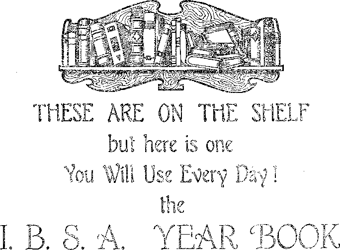

loommmmmmmmmmmmismijmmsmsmmmim in this issue CHRISTMAS: ITS ORIGIN z OTHER PAGAN HOLIDAYS INDIANS’ APPEAL CRITICIZES APOSTLES RADIO SERVICE JOB THE PRINCE radio lecture by Judge Rutherford
EVERY OTHER WEDNESDAY 5c a copy - $1.00 a year - Canada & Foreign $1.50
Volume XI - No. 268 December 25,19 2 9
Contents
Labor and Economics
Night Sanitariums for Russian Workers . . Inhumanity Toward the Mature .....
Social and Educational "Christmas” the Year Around . . . . . . Caught in the Net..........
Some Holidays and Their Origin......
Flathead Indians ’ Appeal ........
Truth (Poem) ............
Angels Not Entertained .........
"Billy Sunday Unmasked”........
Radio Service .............
Manufacturing and Minin
207
201
203
208
213
215
216
222
223
Legitimate Manganese
The Ohio
Uses of Aluminum in South Dakota
204
206
Finance—Commerce—Transportation
Waterway
204
Political—Domestic and Foreign Conscientious Objectors in Britain .......
Agriculture and Husbandry
China Hard Hit by Famine .........
Vineyard Acreage in Italy .........
Science and Invention
The German Stille System of Sound Recording .
Home and Health
Beef Stew a la Literary Digest.....
Religion and Philosophy Christmas: Its Origin and Purpose.....
The Paganisms of the Season.......
The Teachings of the Druids—Pagans .... St. Nicholas the Highwayman ......
Truth Slowly Rising to the Light.....
Santa Claus Article Appreciated......
Not One Word for Christ .........
Bishop Criticizes Apostles ........
Job the Prince . ............
Bible Questions and Answers.......
205
205
207
206
212
195
202
202
202
203
203
215
216
217
221
Published every other Wednesday at 117 Adams Street, Brooklyn, N. Y., U. S. A., by WOODWORTH, KNORR & MARTIN
Copartners and Proprietors Address: 117 Adams Street, Brooklyn, N. Y., V. S. A. CLAYTON J. WOODWORTH .. Editor ROBERT J. MARTIN .. Business Manager NATHAN H. KNORR.. Secretary and Treasurer
Five Cents a Copy—$1.00 A Year Make Remittances to THE GOLDEN AGE Notice to Subscribers: We do not, as a rule, send an1 acknowledgment of a renewal or a new subscription. A renewal blank (carrying notice of expiration) is sent with the journal one month before the subscription expires. Change of address, when requested, may be expected to appear on address label within one month.
Foreign Offices
British .............34 Craven Terrace, London, W. 2, England Canadian ...........40 Irwin Avenue, Toronto 5, Ontario, Canada Australasian . , .7 Beresford Rd., Strathfleld, Sydney, N. S. W., Australia South Africa ............ 6 Lelie Street, Cape Town, South Africa
Entered as second-class matter at Brooklyn, N. Y., under the Act of March 3, 1879*
Volume XI Brooklyn, N. Y., Wednesday, December 25, 1929 Number 268
Christ nas: Its Origin and Purpose By r.h. Barber
[Reprinted from The Golden Age No. 241, by request]
WITHOUT doubt, very few have ever taken the time to investigate the origin and" purpose of the day which we call Christmas. Nearly everybody takes the easy course, and takes everything for granted without taking the trouble to investigate. As a result nearly everybody is convinced that Christmas is the most notable day in history because they think it celebrates the birth of our Saviour. Until about a year ago, I had never investigated this subject. Like everybody else, I had taken it for granted that it was a religious festival and that the Bible authorized the observance of the same.
I had concluded that it was proper to observe the day for the following reasons: It was claimed that it was associated with the birth of our Savior; it was backed up by many centuries of popularity; it wTas a day of good cheer and festivity ; millions of people seemed to get so much enjoyment out of it; and the giving of gifts at this particular time seemed to emulate the example of our Savior, who has given so many gifts to the children of men, and who said that it is more blessed to give than to receive.
The Scriptures, however, tell us to “prove all things; hold fast that which is good”. They also urge the Christian to “be ready always to give an answer to every man that asketh you a reason of the hope that is in you”; and they warn us that a true Christian should not be carried away by every wind of doctrine, but that he should be able to give a “Thus saith the Lord” for what he believes and teaches.
Many others have investigated this subject before I have, and it is to them that I am indebted for such a mass of evidence that it is impossible to doubt its origin and purpose. Both Webster’s and the Standard Dictionary tell us that Christmas day is of pagan origin. So do all the encyclopedias. In its issue of December 26, 1927, the New York World carried a full-page article on Christmas which showed beyond a doubt that the day was observed by various heathen nations for many centuries before the birth of Christ. On the same date, the Chicago Tribune, the Cincinnati Enquirer and the St. Paul Daily News carried shorter articles proving the heathen origin of the day. So did some of the larger magazines of the country. Should any one desire to investigate the subject further, after reading this article, I would recommend a perusal of the following four books: Kitto’s Illustrated Commentary; Wilkinson’s Egyptians; History of Medieval Drama, by Robinson; and The Two Babylons, by Alexander Hyslop, an English clergyman. The last-named book is specially interesting in its revelations, not only on the subject of Christmas, but also on other holidays and feast days now so popular.
I fully realize that what I shall say will not please some. However, I assure you that I have no desire to offend any one, nor to be unkind to any one. I am speaking from no other motive than to help you each and all to be better servants of the Lord. I do not wish to offer destructive criticism, but it is my desire to offer that which will be constructive; something that will help you to understand that Jehovah God has a subtle, wicked and vindictive enemy; and that this enemy is God’s enemy and your enemy and the enemy of all who are trying to do the Lord’s will, and also the enemy of all righteousness.
This enemy has but one purpose, namely, to mock God, to slander His name and to deceive those who are trying to serve God, by hiding the truth from them. To do this, this enemy sets up
false doctrines and deceives the people into believing that these doctrines are taught in the Bible, and thus brings reproach upon God and His Word. Millions of intelligent people despise God, and doubt the reliability of the Scriptures, because they are led to believe that the false doctrines of eternal torment, trinity, immortal soul, the divine right of kings, and the divine right of the clergy are taught therein.
The Fountain of All Error
All false doctrines come from the Devil. The apostle (1 Tim. 4:1) warns us against false doctrines in the last days, our day. I quote: “[This know,] that in the latter times some shall depart from the faith, giving heed to seducing spirits, and doctrines of devils.”
This enemy also foists upon the people many rites, forms, ceremonies, feast days and holidays, and makes the people believe that these are commanded of the Lord; then he makes these appear attractive by surrounding them with a glamour of piety, sanctity, and sentimentality, in order to further his deceptions and keep the people in bondage to ignorance and superstition, so that he may the better control them.
This enemy will at once be recognized as the Devil. The Bible tells us that the Devil comes as an angel of light; which means that he uses religion as a cover to conceal his deceptions, for it is well known that deceptions put forth in the name of religion have greater influence than any other form of deception. The Devil assumes to be a friend of mankind, when in reality he is man’s worst enemy. He tempted mother Eve in Eden, by professing to be her friend. I want to reveal this enemy in all his hideousness, so that none of my readers will encourage or support his wicked designs in the future.
If I can show that Christmas day is a fraud, and an injury to people in general; that it promotes selfishness, dishonesty and falsehood; that the Devil is its originator, and that his purpose was, and is, to hide some of the most important and beautiful truths of the Bible, then I shall be a blessing to you. If Satan is the author of the day, and his purpose was to deceive, then we should expect that no good thing could be said about it, because Jesus said of the Devil, “There is no truth in him. When he speaketh a lie, he speaketh of his own: for he is a liar, and the father of it.”—John 8:44.
Practical Objections to Christmas
Before giving the Scriptural presentations, I wish to enumerate some practical arguments against the observance of Christmas.
Because of the unusual demands upon the people’s time and purse, at this season, and the unusual amount of work involved in purchasing gifts and arranging the festivities, it is always a time of nervous tension and worry. Thus it has become a real burden to the people, and many times do we hear people say, “I shall be glad when Christmas is over.”
Again, there is no command to observe the ...day to be found in the Bible, but we are commanded to observe the memorial of our Lord’s death. Satan, however, has taught the people to give more prominence to the birth of the babe Jesus than to the death of the man Jesus, in order to hide the importance of the ransom, the chief doctrine in the Christian religion. Satan knows full well that if he can cast a halo about the babe Jesus, and get people to feast and fast and work and worry to celebrate His birth, they will, to a large extent, overlook and forget that it was the death of the man Jesus “which taketh away the sin of the world”, and that without the shedding of the blood of the MAN Jesus, there could be no remission of sins.
With this purpose of keeping the ransom work of Jesus in the background, the Devil has caused the world to be flooded with cards, poems, sermons, and pictures of the babe Jesus and His mother, until they are worshiped and reverenced far more than the risen Lord. Satan does not want the people to know about the value and necessity of the death of the man Jesus and of His resurrection.
Then, too, scholars are agreed that December 25 is not the date of the birth of Jesus. December is a winter month in Palestine, and no shepherds are keeping watch over their flocks at that time of the year, as the flocks are not in the fields then. The true date of our Lord’s birth is about October 1. (See Studies in the Scriptures, Vol. 2, pages 54-62.)
Profiteering and Misrepresentation
Then again, everybody is well aware of the fact that the profiteers rob the people during the Christmas season; that the spirit of rivalry and competition enters into the giving of gifts; that the poor people give more than they can afford; that often honest debts are never paid because people spend so much at Christmas time that /hey can not pay their debts; that millions of useless presents are given, which not only waste money, but are just so much junk in the homes, and a few days later find their way into the waste basket. Chief among these are the Christmas cards on which the profiteers make a profit of from 500 to 1000 percent.
Often a gift places the one who receives it under an obligation to the giver, a very unpleasant feeling if one does not have the money to make a gift in return. Ofttimes gifts are given for the selfish purpose of receiving gifts in return. Still again, Christmas trees are laden with expensive gifts for the children of the rich, while the children of the poor go home from the Christmas entertainments with aching hearts, with an orange or five cents’ worth of candy or peanuts as a sort of sop.
One of the worst features in connection with Christmas is the habit which parents have of telling lies to their children about Santa Claus’ coining down the chimney and filling their stockings; and then in later years they wonder why the children tell them lies. These lies may be little fibs at first, but the result is a wicked habit formed by the bad example of the parents. The parents are reaping what they have sown.
No Honor to Jehovah Gad
Still again, every one is aware of the spirit of frivolity, debauchery, drunkenness and revelry so prevalent during the Christmas season, and the propensity to overeat, with the resultant sick-headaehes the next day. Surely none of these things honor’ either Jehovah God or His Son, our Lord Jesus. Every one knows that they are a disgrace, and yet the Christmas season is prolific of all these excesses.
These reasons alone are sufficient to condemn all Christmas festivities, but these reasons are secondary. There are other vastly more important reasons found in the Bible.
According to Genesis 3:15, God told the Devil that the seed of the woman would eventually bruise the serpent’s head. In plain words, God said that a future seed of the woman would eventually destroy the Devil.
In Hebrews 2:14 we read an emphatic statement that Jesus is to destroy “him that had the power of death, that is, the devil”. The man Jesus who died on the cross, and whom God raised from the dead on the third day, and who now has “all power in heaven and in earth”, is the One who is to destroy the Devil. The babe Jesus will have nothing to do with destroying the Devil.
When God told Satan that a “seed of the woman” 'would destroy him eventually, the words • “seed of the woman” would suggest to the mind of Satan the thought of a mother and a son, and that the son would be the one who would destroy him. Consequently, that son would be the mortal enemy of Satan. Satan, however, at that time, did not know who the seed was to be, nor when the seed would appear, nor when he (Satan) would be destroyed. Paul shows us that the “seed of the woman” who is to destroy Satan, is Christ, the Messiah.
The text already quoted (Heb. 2:14) says that Jesus became a man and died That He might destroy the Devil’. All true Christians know that Jesus had to die and be resurrected to the divine plane of being in order to get “all power in heaven and in earth”, so that He would have both the power and the authority to destroy the Devil. Somehow Satan seemed to grasp the thought that the one who was to be the Messiah must die and be glorified, and so he determined to make a counterfeit Messiah, a counterfeit “seed of the woman” for the purpose of deception, and also in order to confirm that first lie uttered in Eden, when he told mother Eve that she would not surely die. Let us see how he did this.
Nimrod and Semiramis
Shortly after the flood lived Nimrod, a greatgrandson of Noah, and a very wicked and licentious man. He married his own mother, whose name was Semiramis. These two together engaged in hunting and drunken debauchery. Finally Nimrod was slain, and the Devil used the wicked and cunning mother to foist the false messiah on the world. The Devil instigated the plot and used Semiramis as his dupe. She announced that her son and husband had been resurrected, and was now a god, an invisible spirit god, and succeeded in making the people believe this lie. Semiramis was a wicked, shrewd and unscrupulous woman, and wanted some glory for herself; so she boldly put forth the claim that she was the “woman”, and that her resurrected son was the “seed of the woman” mentioned by Jehovah God in Eden, and that the resurrected Nimrod was the one who was to destroy the serpent. Here was the beginning of the “mother and son” idea which has been perpetuated in all the heathen religions of earth, and which has been adopted into the so-called Christian religions of earth, and still exists in our day.
Urged on by Satan, this wicked woman designed a symbol of all this deception, as follows: The dead Nimrod was pictured by the dead stump of a tree. Semiramis claimed that an evergreen tree grew up out of this dead stump in one night, and that this evergreen tree pictured Nimrod risen and glorified. Semiramis also gave her son the titles “the father of gods” and “the branch”, and adopted the titles “mother of God” and the “queen of heaven” for herself. These titles are found in all heathen religions, and still persist in some of the so-called Christian religions of our day.
Now notice that a title applied to Jesus, in the Bible, is “the Branch”. Notice, also, that evergreen is a Bible symbol of everlasting life, but that Semiramis used it to teach that Nimrod was the possessor of everlasting life. Nimrod, before his death, founded the Babylonian Empire, and built the Tower of Babel. Oh the stone tablets, recently dug up in the vicinity of ancient Babylon, Nimrod is pictured with a mace crushing a serpent’s head; in other words, he is represented as doing just what Jesus is soon to do, namely, destroy the Devil. Thus Nimrod became a false Messiah, and Satan succeeded in getting the Babylonian Empire to ac! cept his fraudulent and counterfeit Messiah. ; The Scriptures declare of the true Messiah ' that He would give gifts unto men, and the , Scriptures show that these gifts consist of a i resurrection of all the dead, and the further gifts of liberty, peace, happiness and everlast-i ing life for all who will obey and do the will of j the Lord. Now please notice the miserable counterfeit of these gifts which the Devil instituted.
Our present-day Christmas tree had its origin , in that evergreen tree said to have grown up : out of the dead stump. Semiramis claimed that ■ the tree was laden with gifts every year on the t, anniversary of the resurrection of Nimrod, and i; that Nimrod placed these gifts there.
1 And now comes the explanation of the 25th day of December’s being chosen as the birthday of our Lord. The truth is that December 25 was Nimrod’s birthday, and that all through the centuries people have been celebrating this date. Nearly all the heathen religions celebrate this date. Here, then, is where the Christmas tree idea originated. However, the day was not called Christmas, nor the tree a Christmas tree, until the heathen custom was adopted into the Christian religion, some time in the fourth century after Christ.
This false system, the counterfeit Messiah, called in the Scriptures the “mystery of iniquity”, is in direct contrast to the “mystery of God”, the true Messiah. This counterfeit system gradually extended to all other heathen nations by the help of Satan, who has led all the world captive at his will. With hardly an exception, all the nations have had the same “mother and son” idea, with the evergreen tree and the giving of gifts in connection therewith; and nearly all of them adopted a date corresponding with the 25th of December as the date of the birth of the son. Candles were always placed on the trees on these occasions.
In Egypt the “mother and son” were called Isis and Osiris; in India (to this day) they are called Isis and Iswara; in Asia, Cybele and De-oius; in Pagan Rome, Fortuna and the boy Jupiter; in Greece, Ceres with the babe at her breast, or Irene with the boy Plutus in her arms; in China, Ching Moo, the holy mother, with a child in her arms.
In Japan, Scandinavia, Thibet and Mexico, we find the same “mother and son” idea, and also among the North American Indians.
When the children of Israel went into idolatry they served Baal and Ashtaroth, a mother and son, and spurious woman and her seed. (Judg. 2:10-13) No wonder Jehovah God was angry with the Israelites when His own loving arrangements were so miserably counterfeited and misrepresented, and His name thus slandered, and His beloved Son thus mocked. The very word “devil” means slanderer. See Ezekiel 36: 20-23; Judges 8: 33.
Other names given to the son, the false seed of the woman, in different languages, are Bacchus, Saturn, Molech, Adonis, Cupid, Tammuz, Achilles and Teotle; while other names given to the mother are Rhea, Juno, Venus, Minerva and Diana of the Ephesians. The mother is always called “the mother of God” and “the queen of heaven”, while the son is called “the father of gods” and “the branch”. All the heathen religions of earth are based on the miserable counterfeit instituted by Satan through his dupe Semiramis. It is the same general idea, although some of the nations have adopted different customs, feasts and rites with advancing centuries.
In connection with this idolatrous worship of the mother and son in all the heathen countries of earth, there were held numerous feast days and holidays. These were celebrated with the wildest orgies, licentiousness, debauchery and drunkenness. This fact is doubtless the basis for the Scriptural remark in Revelation 17:4,5 which reads: “And the woman was arrayed in purple and scarlet colour, and decked with gold and precious stones and pearls, having a gold-e’ cup in her hand full of abominations and filthiness of her fornication: and upon her forehead was a name written, MYSTERY, BABYLON THE GREAT, THE MOTHER OF HARLOTS AND ABOMINATIONS OF THE EARTH.”
In the Bible the true church is called a woman, a virgin; and the false church also is called a woman, but a harlot. This false system of ec-clesiasticism, originated in Nimrod’s day, is also called “the mystery of iniquity”, because it is the most iniquitous thing that ever cursed the earth. It was originated by the great deceiver of the whole world, the slanderer of Jehovah God, namely, the Devil.
To help you get an idea of how successfully Satan has deceived the whole world, I want to call your attention to the fact that the name and title “jolly old St. Nicholas” is a deception, for any unabridged dictionary or encyclopedia tells you that St. Nicholas is the name of the Devil. In the English language we do not use the words St. Nicholas, but use Santa Claus instead, and Santa Claus and St. Nicholas are the same words in different languages.
The Magi and Their Gifts
The Bible also tells the story of how this ■wicked creature called the Devil and Satan tried to kill the real seed of the woman, the real Messiah. In the second chapter of Matthew there is a story of how certain “wise men” from the East (that is, from Persia), came to Jerusalem to locate the babe Jesus. The words “wise men” are a translation of the word “magi”, which means magicians, who are men under the control of demons, and all through the Old Testament, magicians, star-gazers, astrologers, necromancers, and those having familiar spirits are condemned by Jehovah God, and God commanded that they should be killed by stoning.—■ Lev. 20:27.
Jesus was born in Bethlehem, but Satan set a false light in the sky, which sentimental people call “the star of Bethlehem”, and by using this false light led the magicians to Jerusalem instead, to the palace of the wicked king Herod. Satan knew that Herod would try to kill Jesus, and the record shows that Herod, with devilish fiendishness, caused all the male children under two years of age to be killed so that Jesus could not escape. However, God protected His beloved Son against the machinations of the Devil.
The Devil directed those magicians, but the angel of the Lord announced to the shepherds the birth of the Babe who was to become the true Messiah. -It is interesting to note that the Devil’s messengers bestowed gifts, gold, frankincense, and myrrh, on the babe Jesus, but that the shepherds, God’s representatives, bestowed no gifts, but went out and announced the fact that the Messiah was born, a thing which the Devil’s representatives did not do.
There could be no objection to the proper observance of the birthday of our Lord, an observance which would be an honor to His name, and especially if it were held on the anniversary of His birth, and in no way connected with the miserable counterfeit of Satan, an observance which would be befitting to sanctified common sense and which would in no way be a deception, nor be made a source of profit by the profiteers.
When our Lord was on the earth, 1900 years ago, He established the true church. This church continued faithful to the Lord during the lifetime of the apostles; but in his day the Apostle Paul said, “The mystery of iniquity doth already work.” (2 Thess. 2:7) Yes, there had already begun an apostasy from the true faith. This apostasy consisted of an effort on
s
the part of certain godless men to adopt all the heathen customs into the true church, and thus increase their membership by making it easy for the heathen to join the church.
The Bible records this apostasy in Matthew 13:24-28, where it tells us that Jesus sowed good seed, and an enemy came and sowed tares. In verses 37-39 of the same chapter Jesus explained the parable in these words: “He that soweth the good seed is the Son of man: the field is the world: the good seed are the children of the kingdom; but the tares are the children of the wicked one: the enemy that sowed them is the devil.”
The culmination of this apostasy was reached in the fourth century, when the tares had become so numerous in the true church that they could outvote the true saints, and adopted, in their entirety, all the customs of heathen idolatry and gave to these the name Christian. What a slander upon Jehovah God to have all the Devil’s deceptions and frauds called after the name of His Son, Christian!
The “mother and son” idea was adopted into the so-called Christian church, and now we have “the madonna and her child”. The evergreen tree which symbolized the birth of Nimrod, with its festivities, drunkenness and debauchery, was also brought over into the professing Christian church, but for the first time it was now called the Christmas tree. It is significant, too, that the word “Christmas” means “Christ’s mass”.
The prominent heathen festival of Easter was also brought over and engrafted into the so-called Christian church. “Easter” is derived from the name of the heathen goddess, Astarte, which is only another name for Ashtaroth, the mother of Baal. Easter and its festivals are supposed to be in honor of the resurrection of the Lord Jesus. But I am at a loss to know how the pomp and pride, the selfishness and vainglory, the extravagance and splendor, the bunny rabbits and the hot cross-buns, the colored eggs and the cheap and poisoned candies displayed at Easter time, can honor the great King of kings and Lord of lords.
Thus the so-called Christian church has been thoroughly paganized, and has become thoroughly heathen. The Devil has now succeeded in grafting his counterfeit festivals, feast days, fast days and holy days upon the church, and making it pander to all the pride and vanity and selfishness in the human family. Right here I want to quote a witness of highest authority on this point. Cardinal Newman, of the Roman Catholic church, in a book entitled 'Development (pages 359, 360), speaking of the adoption of these heathen customs into the church, says: “These are the very instruments and appendages of demon worship, but they are sanctified by adoption into the church.”
Here, then, is the indisputable evidence that these customs are of the Devil and were adopted into the so-called church, knowingly. The Devil has succeeded in getting the people to adopt all his wicked schemes and to give them the name Christian, in order that thus he might mook the great Jehovah God.
For centuries the people have been humbugged with the worship of images, dead saints, relics, holy candles, holy water, Ash Wednesdays, Christmas trees with their mythological nonsense and falsehoods about Santa Claus and his reindeer; with eternal torment; trinity nonsense; with the immortal soul idea; signs of the zodiac; birth months and birth stars; with beads, crosses, forms, rites and ceremonies, all of which have been and are God-dishonoring, foolish, and childish.
Cardinal Newman was right when he said that “these are the very instruments and appendages of demon ’worship”, but he was wrong when he said they were “sanctified by adoption into the Christian church”. The very opposite is true; namely, the Christian church was degraded and rapidly became filled with tares, children of the wicked one, so that in our day the church is reaping what it has sown, a church whose membership is made up of bootleggers, thieves, murderers, liars, adulterers, profiteers and grafters. God has been dishonored and blasphemed, and His truth has been trailed in the mud.
How glad we are to know that very soon now all the wicked schemes of the Devil are to be exposed and the Devil himself is to be bound for a thousand years, so that he may deceive the nations no more. After the thousand years he is to be loosed for a little season and then cast into "the lake of fire”, which means his everlasting destruction.
The Bible encourages the giving of gifts, and in most explicit ±anguage tells us whom to make the recipients of our gifts. There are no scriptures warranting us in giving gifts to those wTho do not need them. Let me quote: “Whoso hath this world’s goods, and seeth his brother have need, and shutteth up his bowels of compassion, . . . how dwelleth the love of God in him?”
The Bible further advises that in giving gifts we do not let our right hand know what our left hand does; but the way of so-called Christians is to hang the gift on a tree or publish the name and amount in the newspaper so that everybody will know about it.
“Christmas” the Year Around By Harold W. Kline
NOW that The Golden Age has so dearly and logically presented the truth about Christmas customs, which arrangement is indeed be-, coming a heavy burden and a greater hypocrisy year by year, I offer the following:
Let each one, on his birthday anniversary, bestow upon acquaintances all that his prosperity will allow.
All mankind instinctively desire to be a blessing to their fellow men, but circumstances of lack of knowledge or substance have precluded this pleasure from the majority. However, the invisible King is here and the Kingdom is being shaped and the world is due to witness a multiplicity of radical changes. ’•
By the present method, the donating and receiving takes place once a year. And what a melee! By the plan I suggest, the entire following year is spread before each one as a reception period, and all the memory work necessary is to remember the date of one’s birthday. No more trying to keep track of friends’ birthday dates and remember them with a postal card or gift!
On one’s own birthday anniversary it should be a genuine pleasure to express thankfulness and appreciation for another year of life by overflowing blessings to friends, according to your conception of their needs and your ability.
I can imagine receiving, during the year, a little note from a friend proffering me some coin of the realm; another would send a latest book of elucidation of the Lord’s purposes; another might offer the use of his automobile for so many hours during the year; while another may send me a postal card telling me he is alive and striving to honor the Lord, and that I am still in his memory.
And so, throughout the year, I would find myself the recipient of gifts of various kinds, some of which I may not cash in during the year; but then again, I might have the toothache and find it a real blessing to cash in on my dentist friend’s gift of professional work up to the amount of ten dollars, or cash in on another friend’s gift to supply me with any of the Truth books that may be published during the coming year or use my "automobile hours” gift to spread the message of the Kingdom in territory which I could not reach otherwise. And so forth, and so on. As space will not permit enumerating other examples, just day dream a couple of pages of gifts you would like to receive during the year and see if you don’t get a kick out of it.
And then, some gifts might seem odd to offer, yet I am sure if I should, on my birthday, send a note to a widow who lives nearby and whose health is none too good, saying I pledge as a "birthday gift” to keep her sidewalk clear of snow all winter and will put her ashes out every week, it would be very much appreciated and would only afford me exercise.
If I were rich in gold, perhaps I might scatter many coins or bank notes, but then my gift to read s'o many hours during the year to an elderly neighbor whose sight is failing, might be more appreciated than gold. So again, dear reader, to conserve space, day dream a couple of pages of what you would like to do for your friends when your birthday anniversary rolls around.
Order, economy, and real help are, of course, pleasing to the Lord, and this arrangement seems to me ideal, for it would contain the elements of surprise, thoughtfulness, unselfishness and variety which are the charms that have held the Christmas idea together as long as it has in this day of increasing light. How is it by you? ??
The Paganisms of the Season (Contributed)
HAVE just finished reading “Christmas, Its Origin and Purpose”, by R. H. Barber, in December, 1928, issue.
At last some one has come forward and said just what has been rankling in many persons’ minds. Long before I ever knew anything of Pastor Russell’s books, I perceived that Christmas as celebrated in our “civilized” countries was a hideous curse, with its paganisms, its shameless profiteering in which merchants made mints of money while clerks who were paid the scantiest wages went home about midnight only to spend a Christmas day in bed, trying to recuperate lost strength of a previous two weeks of crazy buying on the part of the public, known as the “Christmas rush”. When I dared to raise my voice against it I was roundly criticized as a Christ-hater. The more I thought of Christmas, as now practised, the worse it looked. No wonder many people are glad when Christmas is over. It is a wonder they are allowed to say it, though.
This article gives mighty good thought upon the subject. It is plainer than ever why Christmas is what it has become.
When the Kingdom shall have fully arrived no doubt we shall see many changes. Many lovers of the old order won’t know the New World, with all their old paganisms gone. Its vigorous and righteous rule will be galling indeed to the lovers of fables. It is easy to see how all this will be a fiery torment to them;
I have heard many discussions as to whether it is right to tell the children that there is a Santa Claus. It seems too silly to discuss such a thing. Of course, the only answer is to tell the children the truth. If we do not do so we need not expect them to be truthful either. It would be a shock to some fathers to hear what a*Scotch child said to his little girl neighbor: “I used to believe in Santa Claus, but now I know it’s only me faither, and I am beginning to think that the Devil is me faither too.”
The Teachings of the Druids-—Pagans By Harry Powell
RH. Barber’s article makes it plain that the
• Devil is the author of Christmas. A fellow Bible Student and I have made a study of it for some time. We looked up some of the oldest English history, and it shows that the doctrines of trinity, torment, god of war, etc., were part of the teachings of the Druids, which were in existence long before Catholicism, and, as the writer says, these are perpetuated to. this day. Clearly then, churchianity is pagan. We have not observed Christmas for several years, but, on the contrary, have denounced it to all who conversed with us on that subject.
I would suggest to you the following scriptures, which give a clear picture of a Christmas tree, even to the hammer and nails. These trees were used in the worship of Baal and Ashtaroth, the Israelites having left the worship of Jehovah. The prophet shows the contrast between the god they worshiped, represented in the tree (and which had to be carried), and Jehovah, Maker of heaven and earth. (Jer. 10:1-11) Hosea 4:13 shows that Baal worship was associated with groves on the high places.
St. Nicholas the Highwayman By Dr. W. G. Wright
I DID a little investigating on my own part of this venerable old St. Nicholas and find that he was the patron saint of thieves and highwaymen. These no doubt include some of the merchants who ply their trade so energetically at this joyful season.
The venerable Bede (De temp, rat., Chap. 13) relates that “the ancient people of the Angli began the year on the 25th of December, when we now celebrate the birthday of the Lord; and the very night that is now so holy to us, they called
202
in their tongue modranecht (modra nicht), that is, the mother’s night, by reason of the ceremonies which in that night-long vigil they performed”. .
The 25th of December was a feast of Mithra-ism, a religion that invaded the West at the same time as Christianity, but, unlike Christianity, Mithraism died of its own inanition. The Mithrais feast wTas called the natalis invicti solis, or birthday of the unconquered sun.
Truth Slowly Rising to the Light By W. N. Lundquist
ZA NE clergyman was given a copy of The Golden Age of December 12, 1928, and was advised to read the first article, “Christmas, Its Origin and Purpose.” Later he was asked what he thought of it. He replied: “I knew that both Christmas and Easter were heathen holidays, and therefore say just as little as possible about them.”
Another man who is affiliated with organized Christianity, after having read the same article was asked his opinion of it. He said that it was good except for one thing. Upon being questioned concerning that one thing, he replied: “They are a little too hard on the Devil.”
I also want to tell you of an incident that occurred in one of the public schools. The teacher asked the pupils this question: “Who are dependent upon others for support?” They were told to write the answer. When examining the papers the teacher found one little girl had written her answer thus: “The clergy.” The teacher told the little girl that this was not right. What do you think about it?
Santa Claus Article Appreciated
UUDER the title “Modern Heretics” the Richmond Christian Advocate seems to intimate th it seme people are getting a little light on the Santa Claus question, anyway. The Advocate says:
The heretics have no conscience at all. They have even now launched a campaign against our good old friend, Santa Claus, and are giving themselves to the task of making young hopefuls renounce their beautiful faith in the old friend who gladdens the years of childhood. They were working on a youngster recently with the following results: “Why, Willie!” exclaimed the Sunday-school teacher in astonishment. “I’m surprised to hear you say that there is no devil!” “All bunk; just like Santa Claus,” returned the sophisticated child. “It’s your father.”
Caught in the Net
EXPERIENCE in New York hospitals indicates that one person in every fifty, or, to be more accurate, one person in every forty-nine, is a twin. About one person in every thirty-three hundred is a triplet.
THE junk collected by a London dealer, the rubbish thrown away in the world’s greatest city, maintains an orphanage of more than a thousand children. Rags, bottles, and old newspapers constitute most of the valuable finds.
THE Soviet government has a system of night sanitariums for workers whose physical standard is below par. Such workers are ordered to the sanitariums and usually kept there for ten weeks, full wages being paid to them in the meanwhile. There are thirty such sanitariums in Moscow alone.
Doctor Downey, Roman Catholic archbishop of Liverpool, in a recent address in London made the following interesting observations: “In a century we have leavened the whole of society. It is no exaggeration to say that half the Boy Scouts of the world are Catholic.”
Sun Bathing near Berlin
TWENTY miles out of Berlin there is a beach on a riverside where, during the hot season, seventy thousand persons will be found taking sun baths at one time. These baths have become so popular that the beach will be extended two miles farther next season.
TN AUSTRALIA the cause of arbitration of labor disputes has received a great impetus through the recent election. The Australian labor party scored a sweeping victory, giving them a majority in the House of Representatives over all other parties put together.
204
J
The Ohio Waterway
LTHOUGH'the Ohio waterway improvemerits cost only $125,000,000, as against one
THE GOLDEN AGE
billion dollars for the Panama Canal, and although the depth is only nine feet, yet the Ohio carries twice the amount of tonnage that finds its way through the Panama.
Brooklyn, N. Y.
TT REQUIRES the services of thirty-five J- guides to handle the visitors at the Ford automobile plant at River Rouge, Michigan. The guides work from eight-thirty in the morning until late in the afternoon. As many as eight thousand people have visited the plant in a single day.
TN BALTIMORE a minister who knows how to play a drum follows the Salvation Army < method of going out in the streets and literally Si drumming up trade. The youngsters follow him back to the Sunday school, and thus a failing enterprise is stimulated to renewed vitality.
IN AN address to schoolboys in England,
Rudyard Kipling said: “Most injustice is not inflicted deliberately, but because people do not take the trouble to think things out. Thinking gives them headaches, and if persisted in may cause them to change their opinions. So it simply isn’t done.”
WHEN British troops evacuated Koenigstein on the Rhine the German populace stood out in the rain and sang “Auld Lang Syne”, while the British troops showed their interest and enthusiasm by pulling off mid waving their jackets. This was a parting of friends, not enemies.
PERHAPS carried away by stories of other stowaways aboard airplanes and zeppelins, a little three-year-old Michigan boy crept under his father’s seat in a railway train and stayed there until he was fifty miles away from home. He wanted to go with his father to Minneapolis, and he went.
T ouis Bamberger, famous Newark merchant, recently called before him 235 of his employees who had been with him fifteen years or more and divided one million dollars among them. It was said that some of the veterans in his employ received as much as ten thousand 'dollars. The list was not made public.
MAIL from New York to Buenos Aires now takes eleven days by air, cutting off six days from the ship and rail time. The route is via Miami, Panama, and the west coast of South America. The first mail from Buenos Aires came through exactly on time. The mails leave once a week.
THE smallest book in the Brooklyn public library is % inch wide by % of an inch high. It contains 140 pages, 10 lines on a page, and is printed on Japanese linen and bound in red leather. The whole book, which is about the size of a thimble, was printed at Kingsport, Tennessee.
Arthur Henderson, foreign minister of Britain, in an address on the objectives of the Labor government recently, said: ifWe are out to end the waste and folly of that competitive system of armaments which has cost so much .and which the nations still maintain, and which besmirches the name of our civilization.” .
ALUMINUM is legitimately and profitably used in the construction of airplanes, railway passenger coaches, buses, trolley cars, cables, radio work, automobiles, furniture, paint, shingles, roofs, towers and cupolas. It will also likely be used for lift bridges and traveling cranes.
A BALKAN newspaper has urged postmasters, when they have finished reading publications intended for subscribers, to please be so good as to send them on direct to the subscribers instead of first loaning them around to their friends and relatives. Seems like a reasonable request, when you come to think of it.
An Effort to Suppress Crime
IN AN effort to suppress crime at its source the authorities of St. Gall, Switzerland, have enacted a law forbidding all children under sixteen years of age to attend movies, even if accompanied by adults. The little folks will ’be shown only such educational and other films as have passed rigid c usorship.
The Cosmopolitan Negro
ETWEEN 1910 and 1920 the Negro population of Philadelphia increased 60 percent, of New York 66 percent, of Chicago 148 percent, of Cleveland 308 percent, and of Detroit 611 percent. This addition comes from the cotton fields of the South, and means a great change in the Negro.outlook on life.
National Sunday School Union Bible
HE National Sunday School Union of Britain has published a new Bible from which have been omitted The Song of Solomon, most of the book of Genesis, and occasional chapters here and there from other books. By the time they'get through, the rest of us will be in luck if they leave the covers and the title page.
The Marion Massacre
HE massacre at Marion, North Carolina, in which six members of the American Federation of Labor lost their lives, has the interesting feature that four of the six heads of families that were killed were shot in the back. The shooters claim that they fired in self-defense. If they did their bullets must have traveled a course in the form of a circle.
China Hard Hit by Famine
HE drought of 1929, one of the most extensive and persistent in history, turned into a desert a part of China which is usually regarded as one of the most fertile sections. As a result whole villages have been depopulated. The cheapest grain has gone to $12 a bushel. In many villages the people are tearing down their homes and selling them for enough to maintain their lives for a few days only. In one city twelve concentration camps and nineteen relief stations are operating day and night, and bread lines are so long that it takes two days for the line of the hungry to pass by the station once and receive one ration.
Character and Spirituality Not Affected
HE Methodist bishop -who got caught in a Wall Street gambling transaction and was pinched to the tune of $91,000 before the firm failed now testifies that these business transactions did not in any way affect his character or spirituality, to which may be added the words of the Apostle Paul to the erring Corinthian brethren Avhen he said, “And I partly believe it.-”
Conscientious Objectors in Britain
BEAT BRITAIN has removed the bar that since 1918 prevented conscientious objectors from entering the Civil Service, and has also removed the bar to their promotion in the Civil Service and restored the positions and salaries and pensions that they would have held had it not been for the period during which their service was suspended.
Uncle Sam’s Industries .
NCLE Sam operates in Alaska a railroad longer than from New York to Buffalo, and is sole owner and manager of a barge line on the Mississippi River. He builds roads, owns and operates canals, transports and handles mails, lights airways, and altogether operates some thirty or forty agencies covering every form of transportation.
Brisbane Tells the Truth
OMMENTING on the suggestion of a doctor of divinity that teaching the fear of hell would make suicides hesitate, Arthur Brisbane says very aptly and truthfully: “It might, but a raise of wages would do more than the fear of hell. A man who believes that life itself is hell will scarcely hesitate to try another kind. Diminish his unhappiness and he’ll stay.”
The Chairman Ought to Know
Ruvesend T. Rhondda Williams, chairman
of the Congregational Union, delivered an address at the annual assembly in London in which he said: “It is the misfortune of the church that the creeds which still hold a formal place in most of them are for the greater part impossible of belief to educated and intellectual men and women. The pulpit is suspected of trimming and prevarication and of something very near to, if not quite, intellectual dishonesty.” Well, the chairman ought to know.
IT IS a mistaken idea that the porcupine can throw his quills, but he is so cleverly designed that he can run backwards and jab the quills into any antagonist. Once a quill enters the flesh it has the curious quality of going deeper and deeper until it reaches a vital spot. Many a dog has lost his life from getting too close to a porcupine.
A NEWSPAPER man in Venezuela writes
that the reason General Gomez has been able to keep his tight grip upon Venezuela for twenty-one years is that he maintains the strictest kind of a censorship on all news in and out of Venezuela. Nothing that would put the government in an unfavorable light is ever permitted to see the light of day.
Professor Rogers, of Massachusetts Institute of Technology, has gained considerable publicity through his advice to the young engineers that if they wish to attain success they must become snobs. But how much better it is not to attain success than to become that kind of man. Success is not happiness; but modest, patient, industrious usefulness is happiness.
CHICAGO is not the only city that can boast of racketeers. New York is now investigating its poultry racketeer industry, which levies one cent a pound on every item of poultry sold in New York or Brooklyn. Independent dealers from other cities are threatened with violence; local dealers must buy in one place and pay the racketeer price, or trouble is threatened.
Virginia Methodists on War Path for Tobacco A LITTLE while ago the Church of the Brethren agreed that henceforth none of their pastors should chew the cud. At some previous time a wave of enthusiasm in the same direction must have swept over the Methodist Episcopal Church, South, located in Virginia. Anyway, the Methodist brethren have tired of the notobacco program, and by a vote of 170 to 132 have petitioned the General Conference that they be permitted to smoke and chew tobacco and to take snuff.
DISCOVERY of manganese ore in South
Dakota is almost sure to change conditions of life in Brazil, Africa, Russia, and India, the sources from which American steel makers now get their manganese ore. It is estimated that the newly discovered deposits will almost surely make America independent of its foreign sources of supply.
T T IS well known that Henry Ford believes in * high wages for the workers. But for some unexplained reason it is charged that in the Ford rubber plantation project in the Brazilian province of Para the wages paid the workers are only about 36 cents, plus food and housing, and the workers are on the go twelve hours out of every twenty-four.
WHILE the National Sunday School Union
is trying to improve upon the wisdom of Almighty God by getting up an abbreviated Bible, the circulation of the unexpurgated edition continues greater than ever. Parts of it were translated in ten new languages this past year, the total number of translations now standing at 618.
The German Stille System of Sound Recording T)Y THE German Stille system of sound re-cording, a permanent record of speech or other sound is made on a thin steel wire or on a piece of steel tape. Perfect reproduction from the wire or tape is said to be achieved. The inventors are now putting the entire Bible on these wires, with the result that the owner may at any time have any part of the Bible spoken to him, without his being to the trouble of having to do any reading.
Dr. Robert Clarke, vice president of Geneva
College, Beaver Falls, Pa., made application for United States citizenship provided he might amend his oath of allegiance so as to read that he would support the constitution “as long as it does not interfere with loyalty to Jesus”. His application was refused. America is officially a Christian country and it officially takes the position that in this Christian country no one may place Christ first.
LATVIA has the honor of having perhaps the most humane prison system in the world.
The prisoners are paid decent wages for their work, so that while incarcerated their families need not suffer. In the United States, when a man is put in prison his wife and babies not infrequently suffer much worse than the man himself. In Italy, when a man escapes they imprison his family. ■
Expelled from University for Thinking fT'IIINKING about the outrage of justice in the Mooney and Billings case led a student at the Univcysjty of Pittsburgh into a demonstration in fA.'or of the release of these two innocent men. He Was dismissed from the university and has asked the Common Pleas court to reinstate him. University students will take note from this that they must not do any independent thinking. It will not be tolerated.
"IMPROVED sanitation has increased the ratio of men 65 years old and over to the total population from 3.9 percent to 5 percent, in the last fifty years. Vet the percentage of men 65 years of age and over who are gainfully employed grows constantly less and less. Many firms refuse work to men over forty, figuring that such men will work more slowly and will be getting pensions sooner. Moreover, insurance companies are driving older men to the wall by offering lower rates to employers who do not hire persons over forty.
PERHAPS you wonder how one man could in ten years get in his own name eight hundred million dollars' worth of public utility stocks, and all with a minimum investment of actual cash. The whole scheme of holding companies, share corporations, and investment trusts rests upon the fact that it costs less than % of a cent a kilowatt hour to make electric current which is sold to the public at often well over ten times that amount. It is absolutely the most perfect form of theft known, being perfectly safe and perfectly legal. The only losers are the poor man who pays ten times what he should pay for his electric current, and the country as a whole, which is thus held back from what would otherwise be a normal development.
THE South got its name “Dixie” from ten-dollar bank notes printed in New Orleans about a hundred years ago. These notes were printed in English on one side and in French on the other. The French word for ten is dix, and the notes soon came to be known as “Dixies”, and the country from which they came was soon popularly called “Dixie’s Land”. The name has stuck.
Reverend Williams, president of the Congregational Union of Great Britain, recently said in London: “To pray for victory means asking God to bless our use of poison gas, boiling oil and incendiary bombs, and treachery, and lying and bayonets.” It would be interesting to know what stand Reverend Williams took in the World War. Anybody and everybody is for peace now.
"ITALY devotes 8,500,000 acres of land to vine's- yards, which is more than half of all the vineyard acreage of Europe. In the effort to turn these vineyards into wheat fields, and thus to make Italy self-sustaining, Mussolini claims to have closed 27,000 saloons and declares that if given time he will close them all. Italy is using a cancelation stamp on letters which says in effect that ‘alcoholism leads to tuberculosis and is opposed to the good of the individual, the family and the race’. Switzerland is marking letters similarly.
WJ. Lyster, Pennsylvania state Cossack, ® who with a poker beat to death a prisoner, a miner named John Barkoski, has been acquitted, as expected. This hint to the Pennsylvania coal and iron police that they can murder anybody any time they wish, and that without any fear of punishment, is something that many of them will appreciate. It gives them a free hand to do as they please. To the credit of the judge be it said that he discharged the jurymen with a reprimand for their incompetence in not finding Lyster guilty. It is suspected that the jury was fixed. The Pennsylvania Coal Company has given Mrs. Barkoski twelve thousand dollars. Give it one decent tally.
Some Holidays and Their Origins
ST. VALENTINE’S DAY has nothing very-saintly to commend it as to its origin. The whole month of February was given over by the Romans to a period of almost unbridled licen-
Gifis in Season—
tiousness. One of the common practices was for a group of young men and young women to meet together. The names of the young women were placed in a box and the young men drew them as chance directed and they became partners for a day subsequently known as St. Valentine’s Day. The young woman’s gift for the day was a man.
The gift the young woman drew might be more or less bad, mostly bad; and therefore the gifts passed out on St. Valentine’s Day are often bad ones. It will be noticed that St. Valentine is supposed to be the god of love, or at least that cupids represent him. The dragging of the word “saint” into this thing is only a scheme of the Devil to make real saintliness seem like what it is not, licentiousness.
Lady Day, sometimes called the Feast of the Annunciation, was celebrated in Pagan Rome two hundred and fifty years before Christ was born. This day, March 25, was celebrated as the day when Cybele, mother of the Babylonian Messiah, became pregnant, the birth of the sungod, Decius, taking place nine months thereafter. December 25.
Lady Day became the origin of Mollier’s Day in this wise. On Lady Day, during the Dark Ages, the faithful were supposed to visit the churches in which they were baptized, bearing with them their gifts. In 1910 this custom was modified by Protestants, so-called, and adopted to fit the present practice. Good children need not to be reminded to be appreciative of their mothers once a year; but it boosts business for a day, and that is the real reason the newspapers have so much to say about it.
April Fool’s Day refers to that part of Christ’s agonies where lie was sent from Annas to Caiaphas and from Caiaphas to Pilate and from Pilate to Herod and from lierod back to Pilate on the bootless errands which finally terminated in His death. The Devil’s reason for perpetuating buffoonery and mischief on this day is to give him and his comrades occasion to sneer at the sufferings of the Man of Sorrows. The Hindu Feast of Huli ends on March 31 with the usual April Fool practices common in Europe and America.
Good Friday was celebrated with hot cross-buns in Chaldea fifteen hundred years before Christ was born in Bethlehem; and the buns are mentioned, too, by that identical name. They were used in the worship of the queen of heaven, the goddess of spring. At land, the fishermen and their children spend Good Friday skipping the rope, a custom handed down from father to son since pagan times, a relic of demon worship.
Easter is merely another name for the Teuton Estera, Ostera or Eostre, the Assyrian Ishtar, Egyptian Isis, Phoenician Astarte or Ashtoreth, Hindu Iswara, and the Greek and Roman Rhea, Aphrodite, Irene, Ceres, and Venus, mother of the gods. Satan has tried to turn the minds of men away from the sacrifice of the Son of God and toward the worship of a woman.
£08
The Astarte egg (Easter egg) was one of the symbols of the goddess of heaven; and, accordingly, in Cyprus, one of the chosen seats of , worship of Astarte, or Venus, the egg of won-
j drous size was represented on a grand scale.
The Astarte egg is traced in the religious observances of pagan Egypt, Assyria, and Baby-o Ion.
Lent, a period of forty days, in the spring of the year, is st‘11 celebrated by the Yezidis, or pagan devil-worshipers, of Koordistan, who inherited it from their early masters, the Babylonians. Such a lent of forty days, and at the same time of the year, was observed by the ancient dfevil worshipers of Mexico, and also by the Egyptian worshipers of Osiris, Horus, and Isis.
May Day, the first day of May, is in celebration of Baal, Bel, Cahna-Bel (Cannibal), the husband of Ishtar, or Ashtoreth, and in British almanacs the day is still called Beltane. The worship of Bel, or Moloch, was very early introduced into Britain, along with the Druids, the ‘priests of the groves’. The Queen of the May, originally, was the Roman goddess Flora.
Hallowe’en is the eve or night before Hallowmas, or All Saints’ Day, November first. This night is coincident with the Old
Roman Apple festival of Pomona, when pranks with apples were in order; also with the old Celtic Witches’ Night, when spirits walked abroad and when fortunes could be told.
On Christmas Eve, four thousand years ago, the Babylonians lighted wax candles, and the night was known as Mother Night. During that night the mother of Adonis was mystically said to have changed into a tree (Christinas tree) and, when in that state, brought forth her “divine” son, variously called Decius, Tammuz, Horus, Plutus, Tsi, Nimrod, Jupiter Puer and Thor.
The Chaldee name for child is Yule, and this entirely accounts for the putting of the Yule log into the fire on Christmas eve and the appearance of the Christmas tree on the next morning. As the mother was a tree, we thus have the pagan counterfeit of her son as “the man the branch”.
The Devil is willing enough to have Christ’s birth celebrated, provided it is done at the wrong time and provided most attention is given to the mother, as the queen of heaven; but he is determined that on no account shall Christ’s death as man’s Redeemer receive any attention at the proper time. Our Saxon ancestors celebrated Yule day, or Child’s Day, centuries before they came in contact with Christianity in any form.
A Short Sermon on “Dogs” By J. C. Hogan CONTINUALLY I hear as an excuse for joining that dead institution called a denominational church something about as follows:
“Certainly I realize that I am no saint, and I am not joining the church because I believe what they teach or because I expect to go to heaven, but I know I will meet some nice people.”
The following joke in a local industrial newspaper, struck me as being of parallel application:
“1 think I will enter Fido in the dog show this year.”
“Do you expect him to win anything?” '
“No, but he will meet some nice dogs.”
—To a Needy Race
A DISPATCH in The New York World, de. scribing itinerant preaching at circuses in : France, says: “Father Sanson steps into the sawdust ring, and within a minute his motley audience is spellbound with some story or other ■ told in a ringing, vibrant temple voice.” This i is all clear except about that vibrant temple voice. Can anybody tell us what a vibrant temple voice is, and where to get one?
CALIFORNIA physician who has made a study of wild life declares that since the
advent of jazz, and especially radio jazz, many of the smaller birds are kicking their young out of their nests in every part of the world. | The birds are not multiplying, owing to the irritation which the Devil’s own music has on their delicate, sensitive nerves. Jazz promotes sex pressure and moral instability.
EFERRING to the work of a Berlin chemist in producing one-tenth of a gram of pure
gold from one and two-thirds grams of lead, the Denver Post says: “But Franz Tousend, the chemist, will never be permitted to practise his transmutation, however practical it may prove to be. The money power of the entire I world will combine against him even to the ex-l treme of taking his life. His discovery would destroy all existing wealth, and existing wealth ; is not going to permit it.” In other words, the ' Denver Post thinks the possessors of the wealth ■ of the world are at heart murderers.
T F YOU hear that the Gulf coast is strewn with wrecks and that hundreds of Gulf fishermen have been drowned you will please take notice that on Sunday, August 11, at St. Michael’s church, Biloxi, Mississippi, the custom of blessing the boats and fishermen which ; prevails among the superstitious fisherfolk in the Adriatic Sea was transferred to American shores. Of course, we can not help it when we have all this bad luck wished on us. The most we can do is to take note of the items and remember what Barnum said. Barnum had it right. There is one born every minute. “And my people love to have it so.”
ID you know that in South America there are automobiles equipped with steel carwheels that do all their traveling on railway lines up and down the mountain, and that in Africa the automobile has been used for prospecting for diamonds in territory where armed soldiers fear to go? The cannibal natives fear the iron monster and keep the peace while it is around.
THAT must have been a thrilling half-hour for the men of Commander Byrd’s expedition when on two consecutive days they saw a brilliant bright green sun. The explanation is that, being near the South Pole, they traveled for a half-hour in the green band of light which lies on the borderland between sunlight and darkness. In temperate zones we cross this green band so quickly that it can seldom be observed even for an instant.
UDAPEST, hitherto regarded as one of the noisiest cities in Europe, has gone after the noisemakers in dead earnest. Fifty-two kinds of noises have been classified, and everything humanly possible has been done that can be done by law to reduce their number and volume. There are new laws regarding trolley cars, automobiles, fire trucks, ambulances, military bands, actors, dogs, gramophones, peacocks, parrots, whistling, singing, hawking of newspapers, loud talking in vehicles, etc., and all parties must break up at ten p.m., unless they receive special permission to continue two hours longer.
resident Green of the American Federation of Labor recently said: “It is a most tragic and pathetic condition, when we find that men who start in as apprentices in a trade, gradually developing into skilled mechanics through the years, until they reach the meridian of life and are at the height of their skill, see some machine is introduced and without hardly a moment’s notice a whole lifetime of training is rendered valueless. It is a social wrong, and it will menace the security of even our wonderful government if it is to continue without restriction and regulation.”
A CONSUMPTIVE driving his wife and nine-year-old son from Ohio to Arizona, where he hoped to find life more congenial, got as far as Tulsa, Oklahoma, ran out of gas and when he had been supplied found he did not have enough to finish paying for it. He thereupon brandished a gun and drove off. He has just been given a sentence of life imprisonment, un-. der Oklahoma’s new law. If that is justice, what ought they to dt to Sinclair and Doheny?
WE DO not justify crime by whomsoever committed, out one can hardly avoid comparing the life sentence meted out to the poor consumptive in Oklahoma who tried to run away with gas worth $1.15, and the six months which California has just given to a wholesale dope peddler who had over $50,000 in dope at the time he was arrested, and besides that had at least two guns with the numbers filed off and two hundred gallons of whiskey.
THE reign of terror in Yugoslavia shows all the earmarks of the regular orthodox dictatorship. The police are out of bound, murdering prisoners both in prison and out. Espionage is everywhere. No one knows whom to trust. The press is dead. A lawyer who merely proposed an appeal to the king for the restoration of the constitution was locked up for six months. A newspaper man says: “The country has become a paradise for police spies, agents, scabs and blackmailers.”
ORDAINING three young men into the Methodist ministry at. Spokane, Bishop Titus Lowe admonished them, among other things, to look like preachers. “Do not try to appear laymen, and conduct yourselves as ambassadors of the Almighty,” he added. We offer a year’s subscription to The Golden Age to the bishop if he will find the word laymen in the Bible, or if he will find that the Lord or the apostles intimated in any way that any follower of the Lord is restricted as to how he shall look or what he shall say in his efforts to glorify God’s name. The division into clergy and laity is all in the head of the bishop, and not in the Bible at all.
A WOMAN cotton mill worker in North Carolina testified: “I work twelve hours and twenty minutes a day and I am completely worn out at stopping time.” We found this in The Nation. But Mr. J. P. McGrath, in an address before manufacturers at the Hotel Roosevelt, New York city, said: “The manufacturers of the South have been slow to advertise to the world the things they have done for the betterment of their people.” We found this in the New York Times.
THE war in North Carolina is being fought in the same inhuman way as all other wars are fought. When an armed mob, with many police mixed among them, and without warrants, invaded a striker’s camp, they were repelled by gunfire, and a policeman was killed. As a result thirteen strikers were held for first degree murder without bail. When another armed mob killed Ella May Wiggins on a public highway because she was in the company of unarmed strikers, the killers were charged merely with second degree murder and manslaughter, and were released on $1,000 bail furnished by the mill owners.
TJIRE 'Nation says: “The man who pays, let us -L say, $10 a quarter for an ordinary life-insurance policy in any of the great standard companies is not in need of sympathy. His money is safe, the company is carefully guarded by our insurance laws against the more obvious forms of fraud, and frequently he receives a goodly dividend check as his share of the mutual profits, although he might make a wry face at the word “mutual” if he knew that Frederick H. Ecker of the Metropolitan received a salary of $197,000 in 1927 even before he was president of the company, or that Darwin P. Kingsley of the New York Life has a stipend of $112,500. It is the working-class fathers and mothers who pay five, ten, and fifteen cents a week for industrial insurance who are caught between the upper and nethei' millstones of their foresight and poverty. In this class of insurance the chances are about eight or nine to one that the family which starts payments will never collect the full value of the policy.”
,S
A FREIGHT train in Morocco was held up by an army of millions of snails and could not proceed along the greasy rails until a pusher engine was brought to assist. In India a passenger train was six hours late, owing to a column of locusts estimated to be eight miles long and two miles wide. The locusts had not yet obtained their wings and were able only to creep in mass formation.
British Columbia is now expending about a million dollars a year in old age pensions. This amount is raised by taxation, the federal government contributing one-half the amount. It is inevitable that this should spread, because the people will not tolerate depriving elderly men of a livelihood by refusal to employ them and letting them starve when on the edge of the grave. Old age pensions have been declared unconstitutional in Pennsylvania, but even Pennsylvania will get civilized yet.
=t
RECENTLY a Pittsburgh man recognized on the street a valuable police dog missing from his home for three years. When he questioned the ownership of the dog a crowd collected, and a policeman, evidently a descendant of Solomon, arrived. The policeman asked the owner of the dog to give her an order. He or-idered the dog to jump on his truck, and the ’ words were no more than out of his mouth be-I' fore the dog jumped through the window. He drove away with the dog.
THE Pacific Southwest buys 42 percent of the national airplane production, has 33 percent of the pilots, 35 percent of the airports, and is the home of twenty of the sixty-two air transport companies. Two Los Angeles men have recently invented a semi-turbine rotary airplane engine which is without pistons, cams, sleeves or valves. It has only fifteen parts and develops two horsepower to the pound, making it the lightest airplane motor’ ever built.
ipiIE War Department has perfected an arrangement by which, anti-aircraft guns are automatically fired at a plane a mile high and every shot hits the target. The location of the plane may be made from a point as far as a mile away from the anti-aircraft gun, but the results are the same. This means, in effect, that war is now becoming a war, not between men, but between machines, and raises the question, Why have war at all?
TT SEEMS incredible, but in September a
Studebaker pulled itself up Pike’s Peak a distance of 12 miles and 2,200 feet, and a vertical lift of 4,959 feet, all in 21 minutes 43.4 seconds. This trip over this crooked and rapidly ascending highway was made at an average speed of 34.3 miles an hour. At several points along the road a misjudged skid or miscalculated turn would have dashed car and driver to the rocks thousands of feet below.
Beef Stew a la Literary Digest By Wm. B. Hathaway
NO DOUBT you will be interested in a case , of aluminum poisoning which came to my t attention today.
j Mr. H. G. Seeley, 1210 Race St., Kalamazoo, \ is a motorman on our street cars. Recently he I reached home at midnight; and his wife had a Il. beef stew ready, cooked in aluminum. Then |j .hey received word that they had to leave the I fity on short notice; and they took the stew with I hem in the aluminum dish, and warmed up the I: stew and ate it eleven hours later. It was in the aluminum dish eleven hours after being cooked.
All who ate of it were quite seriously poisoned. They had pains in the stomach, running of the bowels, and much perspiration, all-in for a day or two.
I have a friend who runs a junk yard for old autos and I was telling him about the aluminum, and he said he had often noticed the aluminum around the yard would develop a white powder on the surface from the action of the atmosphere. He showed me some of it.
Flathead Indians’ Appeal
(Transcript of a portion of a school history, with appended comments, by Albert S. Johnson.)
IN THE year 1832 four Indians belonging to the Flathead tribe, living west of the Rocky Mountains, performed a most trying journey, going on foot to St. Louis, Mo., for information concerning the “Christian’s book and the white man’s God.”
These Indians had learned some of the teachings from Lewis and Clarke, and were imbued with a desire for more knowledge.
In 1833, notice of this wonderful trip and its cause was given in the Christian Advocate and Journal, published m New York; and a general feeling of interest in their behalf was created there among the churches. \
A meeting of the missionary board of the Methodist Episcopal church was called for the purpose of pr< eeeding forthwith to establish a mission among the Flathead Indians.
At a meeting of this board, Jason Lee was selected to superintend the Indian mission beyond the Rocky Mountains. Rev. Daniel Lee, his nephew, was appointed as his assistant in the same field of labor. They learned that Capt. N. J. Wyeth, of Cambridge, Mass., had just returned from a tour west of the Rocky Mountains, and that he contemplated returning to Oregon the following spring. On receiving this good news, Rev. Lee ivent at once to Boston to arrange, if possible, to make the trip with them; and to this Capt. Wyeth readily consented.
Rev. Lee added to his number by the consent of the board, Cyrus Shepard and P. L. Edwards, who joined them when their party arrived in Missouri; their party now numbered four. After holding a missionary meeting in St. Louis, they proceeded to Fort Independence, Mo., which was a general frontier rendezvous; and there met Capt. Wyeth and his party on the 24th of April, 1834.
Only two of the Indians returned to their people to carry the good news, the other two having sickened and died.
To give a better understanding of the Indians on this-journey and while at St. Louis, and of their expressions of disappointment, I here quote from chapter three of the work of Dr. O. W. Nixon:
“While St. Louis was at that time so near the border of civilization, yet in 1832 the appearance of the four Flathead Indians dressed in tribal costume was a rare sight, as they strolled along the streets.” Dr. Nixon tells us that “General Clark, who commanded the military post of that city, was promptly notified and took the strangers in charge”. He had been an Indian Commissioner for many years in the far west, knew their tribe well, and could easily communicate with them.
“With it all he was a good friend of the Indians and at once made arrangements at the fort to make them comfortable. They informed him that they were all chiefs of the tribe and had spent the entire summer and fall upon their journey. Their wearied manner and wasted appearance told the fact impressively, had the general not known the locality where they belonged.” .
Continuing, Dr. Nixon says, “For a while they were reticent regarding their mission, as is usual with Indians; but in due time their story was revealed. They had heard of the White Man’s Book of Life’, and had come to hunt for it and to ask for teachers to be sent to their tribe.
“To General Clark this was a novel proposition, to come in that way from wild Indians.
“General Clark was a devoted Catholic, and treated his guests as a humane and hospitable man.
“After they had rested up he piloted them to every place which he thought would entertain and interest them. Frequent visits were made to the Catholic churches and- to theaters and shows of every kind. And so they spent the balance of the winter. During this time, two of the Indians, from the long journey and possibly from overeating rich food, to which they were not accustomed, were taken sick and died, and were given honored burial by the soldiers.
“In the early spring the two remaining Indians began planning for their return home, when General Clark proposed to give them a banquet on the last evening of their sojourn, and to start them on their way loaded with all the comforts he could give. At this banquet one of the Indians made a speech brimming over with Indian eloquence, which fired the Christian hearts of the nation into new life. The speech was translated into English and thus doubtless loses much of its charm.
“The chief said: T come to you over the trail of many moons from the setting sun. You were
the friends of my fathers, who have gone the long way. I came with my eyes partly open for my people, who sit in darkness. I go back with both eyes closed. How can I go back blind to my blind people?
“ ‘I made my way to you with strong arms, through many enemies, and strange lands, that I might carry back much to them. I go back with both arms broken and empty. Two fathers came with us; they were the braves of many winters and wars. We leave them asleep here by your great waters and wigwams. They were tired in many moons, and their moccasins wore out.
। “ ‘My people sent me to get the White Man’s
| Book of Heaven. You took me to where you al
low your women to dance as we do not ours; and the Book was not there. You took me to where they worship the Great Spirit with can-i dies; and the Book was not there. You showed
me images of the good spirits and the pictures of the good land beyond; but the Book was not among them to tell us the way. I am going back the long and sad trail to my people in the dark land. You make my feet weary with gifts, and my moccasins will grow old in carrying them;
f yet the-Book is not among them.
;1 “ ‘'When I tell my poor, blind people after one
more snow in the big council that I did not bring the Book, no word will be spoken by our old men or our young braves.
“ ‘One by one they will rise up and go out in i silence. My people will die in darkness and they J will go a long path to other hunting grounds.
‘“No white man will go with them, and no J White Man’s Book to make the way plain. I have no more words.’
“There was a vein of sadness in the expression of disappointment of the Indians on the evening of departure that must touch the cord of real human fellowship, carrying with it the feeling of regret that even after their strong appeal they were not given a Bible to carry ■ back with them. Even though they could not , have read a word of it, it would have been zeal-ously guarded as the word of the white man’s Igod. They would have returned with hopeful . feeling that teachers would follow to guide 1 them; but instead, without the knowledge and ( guidance they came for, they returned to their > people in darkness.
“Who knows but the gift of a clasp Bible in a carrying case to these Indians would have created a greater bond of understanding between the Indians, missionaries and pioneer settlers and would have averted much trouble that followed.”
In the subsequent narrative it transpires that the missionary party headed by the Rev. Jason Lee proceeded with Capt. Wyeth’s company of traders to a place on Snake River, where the latter built a trading station.
“Not wishing to tarry here longer, the mission party resolved to proceed in company with Mr. Thomas McKay and Captain Stewart, also of the American Fur Company, and on September 1 arrived at Fort Wallalula, on Columbia River.”
Here they learned that the Flathead tribe was a small one, and not properly situated for the establishment of a mission among them; and learning this, they determined to go down the country and find a more desirable site for their mission.
“They took passage down the Columbia, on one of the Hudson Bay Company’s boats, and arrived in safety at Vancouver, the 15th of September, where five were most hospitably received by Dr. John McLoughlin’.”
Rev. Jason Lee and party went into the Willamette Valley, which place was strongly recommended by Dr. McLoughlin.
In 1840 began a great influx of immigrants into Oregon territory.
The settlers soon found themselves in need of certain laws as necessity called for them; and a circumstance transpired in February, 1841, which differed materially in its obligation on the community from any that had yet happened.
The cause of action taken at that time was the death of Ewing Young, one of the principal men of the colony, leaving a large estate, with no provision for its administration. He had not a single relative to follow him. Immediately after his funeral, arrangements were made to call a public meeting for the purpose of appointing officers for the government of the community and to properly provide for the disposition of the estate of Ewing Young.
At this meeting the Rev. David Leslie was chosen chairman, and a committee to form a constitution and draft a code of laws included the names of the Rev. Jason Lee and other members of the company who had been sent from St. Louis by the missionary board of the Methodist Episcopal church in response to the appeal of the Flathead Indians for the “White Man’s Book of Life”, and for teachers to “make the way plain” to them.
According to all records and diaries, the direct c ruse of the move to form a provisional goveLmient was the death of Ewing Young, leaving, as he did, a large estate.
This story impresses me as typical of the whole history of the institutional church and the futility of the work of caste-ridden Christians with a professional clergy bound in the civil and social institutions of this world. Herein are the services of such Christian emissaries in behalf of the political state and the property institution historically established. But in behalf of “The White Man’s Book of Life”—what may be said?
Not One Word for Christ
THE following Question and Answer appeared in the “Dr. Cadman’s Counsel” column. Dr. Cadman, we believe, was to have received $25,000 for broadcasting something or other every Sunday over one of the hook-ups. One reads this question and answer, and noting that Doctor Cadman has apparently never heard of the Savior of men, marvels as to what it could be that a crowd of financiers could find in Doctor Cadman that would cause them to pay $25,000 a year for it; for $25,000 a year is a high price to pay for bunk.
Question. I am a Jew, one of a family of ten, seventeen years of age and born in this country. My parents were natives of Russia, and, like many others, came here to start life anew. They brought with them the old Jewish religion, with its traditions and quaint customs. In 1920 my father passed away, and with him, I am sorry to say, most of the religious fervor of our family. I was taught to pray and read from the Hebrew texts, but without any knowledge of the Hebrew language. Since I could not understand Hebrew prayers I soon ceased to pray. I joined the Y. M. C. A. about a year ago and there I made many Gentile friends, becoming somewhat acquainted with Christianity, which resulted in my taking an interest in it and attempting to understand it. At present I do not know where I am at. I was born a Jew and wish to remain one. I have gone so far as to possess a Bible and am reading both Testaments during my leisure. To a young man situated as I am what would you advise me to do ?
Answer. Your questioning attitude is highly creditable. It is not the purpose of this column to make proselytes. But I advise you not to commit yourself definitely until you have larger information and have made a wider personal observation of the issues you raise. I suggest that you write Rabbi Alexander Lyons, of Brooklyn, whose spiritual liberalism will guide you fairly. Let your final decision be rendered earnestly and honestly, at the bar of your own conscience and illumined by your best intelligence.
Truth By Jennie Nash
HTRUTH is the only light that will not change; -*■ Fiction may please, but can not long endure; But superstition marks the present age, Disrobing it of much both good and pure.
All else may change, but Truth must ever stand As steadfast as the everlasting hills;
Older herself than even sea or land
Or aught beside that air or ocean fills.
Truth must prevail; the hills themselves may shake,
The ocean dry from out its mighty bed;
The heavens might stoop, the universe might quake,
But Truth shall live though all beside were dead.
O Truth, thou soul of Nature’s unread law, How few are they who worship at thy shrine I
False creeds more votaries to themselves will draw,
But Truth shall stand the test of endless time.
Adown the slope of everlasting years
Through all eternity shall Truth abide, Unchanged by changes and untouched by time
Truth stands alone, triumphant, undefied.
An everlasting rock on which to build,
A sure foundation for our faith and love;
The troubled waters are for ever stilled
And perfect peace beams on us from above.
Bishop Criticizes Apostles
Bishop Edgar Blake, of Indianapolis, presiding at the annual Illinois conference of Methodist Episcopal churches, referred to the apostles as “a tough lot of Galilean fishermen who quarreled and swore and were self-seek-j ers”. He declared that when they came to Jesus their first inquiry was, “What are we going to i get out of this?” (though we know of no such 1 text, nor anything akin to it) and then he finally - capped the climax by saying, “I don’t believe Peter, James, or John could get into the Illinois i conference.”
i We think that last statement of Bishop Blake is correct. The apostles could not get into the Methodist Episcopal church. Let that stand for t a moment while we look at it. The bishop be: lieves in what is sometimes called the “historic episcopate”. Otherwise he could not be a bishop i in the Methodist Episcopal church. The “historic episcopate” is a high-toned way of saying that the bishop thinks he is lined up with the apostles themselves, in what is called the apos-( tolic succession.
J Too bad the original apostles could not get I ;■ into the place of high honor occupied by their p' successors! As the writings of the New Testament are all the work of the apostles, and as the bishop holds them in such light esteem, we are fair in supposing that he regards the Bible about as he regards the writers of it.
, This leads us inevitably to the position that i as Jesus Christ selected the apostles, and was responsible for their writings, Jesus Himself could not get into the church of which Bishop Blake is one of the shining lights, and we think, as a matter of fact, that He could not get into it, and never did get into it, and is not in it now.
If there had been a World War in Jesus’ day, Jesus’ various declarations, “Blessed are the peacemakers,” “Resist not evil,” “Love your enemies,” 'Do to others as ye would that they should do to you,’ Tut up thy sword into its sheath,’ “Thou shaft not kill,” etc., etc., would have made Him entirely unacceptable as a member of the church of which the bishop is one of the rulers.
The bishop is a “Right Reverend”, but Jesus ■was not a “Reverend” at all. The bishop has been “regularly ordained”, but Jesus was never anything but a humble carpenter before He began His ministry. The bishop has built many, many churches (with money cleaned out of the pockets of other people), but Jesus never built a single one.
When you come to think of it, the bishop does not ask any odds of the twelve apostles, nor of the Bible, nor of Jesus of Nazareth, nor of the One who sent Jesus into the world, and as far as we are concerned he can rest secure in his conviction that the three favorite friends of our Lord, not one of them, “Peter, James, or John, could get into the Illinois conference.” Indeed, we will go a step further and say for them that none of them would wish to.
Angels Not Entertained By 8. R. Fisk
WE HAVE our living apartments above the barber shop, and our third floor is a rooming house for tourists. Four weeks ago a young man and woman came here and wanted to rent our living apartment. The man said he would pay me well if I would move up to the third floor and let them have those rooms. I asked him what he wished them for; and he said that he wanted them as office rooms, that his wife was a clairvoyant and he did other business. Then I asked him where they were from; and he said, “Evansville, Indiana.” I told him that I did not care to rent my living apartments.
An article came out in the local paper a week ago, and was reported to me yesterday, that this couple had procured rooms here in town. They went to the Courier office to advertise, but the Courier refused to advertise for them. Then they had cards printed.
A Miss Bennett found one in her yard. She had some things stolen from her a year ago, and went to this woman to inquire about them. When she had crossed the woman’s palm with money, the woman put her under a hypnotic spell. Miss Bennett drew a thousand dollars from the bank, and gave it to her. She also gave bedclothes and canned fruit; and when she came out from under the spell, they had already left town. The spell was on her about two weeks.
Job the Prince
[Broadcast from Station WBBR, New York, by Judge Rutherford.]
G_OD’S Word, addressed to men is set forth in the Bible. The most illuminating and beneficial study in which man can engage is therefore the Bible. It disposes why there has been so much suffering amongst men and how mankind will be completely relieved therefrom and have a full and fair opportunity for everlasting life on earth in a state of happiness. It is a great privilege and real joy to be permitted to call the attention of this radio audience to some of the wonderful truths contained in the Scriptures. The moving cause for Bible lectures should always be to magnify the Word and the name of Jehovah God and to bring information to the people that will bo helpful to them.
This morning begins a series of lectures on the book of Job. I hope you have all carefully read that marvelous book. In my lectures I shall read only portions of it, and I strongly urge that you carefully read the Bible texts thereof preceding each lecture. It is not unusual in the world to hear men mentioned as great men. God’s Word shows, however, that man is insignificant within himself and is properly called great only to the extent that God uses him. Man has nothing that is worth while except that which he receives from the great Creator. Therefore to the Creator, and not to the creature, is due all honor and glory.
Jehovah is the greatest moving-pictwe producer. He permits men to make some pictures, and as a result of their efforts they think they are great. They are not. Beginning in the early days of man Jehovah used men to move according to His purpose, and by their movements He pictured the coming days of salvation and restoration to life. Of course those men, although anxious to know the meaning of their course of action, did not understand the meaning thereof, because it was not the will of God nor His due time for them to understand. Many of those men thus used had faith in God, and their faith He will in due time reward. Even the angels of heaven desired to understand, but God reserved the understanding thereof to those who should live on earth at His appointed time and who are devoted to Him.
Among the great pictures made and set down in the Bible is that of the case of Job. In fact it stands out separate and distinct, teaching lessons of greatest importance to creation. The
217
book that bears Job’s name has been little understood, as indeed it could not be understood until God’s due time. Viewed now in the light of fulfilled prophecy and of the revealed purpose of God, the book of Job begins to unfold to the diligent searcher after truth. The very language employed in the book gives a clear picture of God’s power to give life to mankind by means of restitution, and also of His purpose so to do. The restitution picture applies not only to Jews but to all peoples of the earth. So far as the Scriptures disclose, Job was not a Jew. He lived outside of the land of Israel. He dwelt in Uz, which is east of Palestine. Concerning Job it is written: “This man was the greatest of all the men of the east.” (Job 1:3) This places Job in a class all by himself and indicates that the picture God used him to make must be a distinctive one.
That Avhich is written concerning Job takes on greater interest when we begin to see that God used him to make a marvelous picture of restitution as a means of bringing life to the human race. Uz was a descendant of Shem through Aram. It therefore follows that Job was a descendant of Shem, the son of Noah and upon which son God pronounced special blessings.' (Gen. 9: 26; 10: 23) “Uz” means “counsel” or “consultation”, which seems to indicate that Uz and his descendants wrere those who sought counsel or knowledge of Jehovah God. That seems to show that Job had relationship with God and that God used him for a specific purpose.
A picture is an image of the real substance. The image may be one that is seen by the natural eye, or it may be a mental representation of that which is tangible. Whether Job existed as a real person or whether the statement concerning him is an allegory matters not. The account is written in the Word of God and is intended for the instruction of mankind. Since the Bible abounds with proof that God used men to make living pictures concerning the fulfilment of His purposes, the proof is overwhelming that Job was a real man and was used to make a living picture, and that he had communication or' relationship with God. Furthermore the proof is quite conclusive that Job lived some time after the days of Abraham. That he did really exist, and that the story is not an alle-
gory, is supported by the testimony of other prophets.—Ezek. 14:14, 20; Jas. 5:11.
There is a striking correspondency of Job with Adam that can not be ignored. The difference was that Adam did not maintain his integrity, while Job did maintain his integrity. Adam, the perfect man, was a prince and dwelt in the garden of God which ivas planted eastward in Eden, and Adam had communication or counsel with God. Job was “the greatest of all the men of the east”, which constituted him a prince among men. He is spoken of in the Scriptures as a prince. (Job 21: 28; 31: 37) He lived in the land of Uz, the meaning of which is that he had communication or counsel with God.
God made the man Adam perfect, and it was the will of the Creator that this perfect creature should worship God. It was the work of the Devil to turn the man Adam away from God. The Devil took that course of action for selfish reasons. Jehovah did not hedge Adam about so as to make him invulnerable to the wiles of Lucifer. God permitted Adam to be subjected to temptation to prove him.
Concerning Job it is written: “That man was perfect and upright, and one that feared God, and eschewed evil.” Even though he was imperfect in his organism and had no right to life, his heart was pure toward God and therefore God counted him perfect. Since God looks upon the heart or motive that induces man to act, He judged him from that viewpoint. “The Lord seeth not as man seeth; for man looketh on the ; outward appearance, but the Lord looketh on the heart.” (1 Sam. 16:7) Job’s heart was soft toward God and he feared God with a proper J or godly fear. (Job 23:15-17) Job therefore i stood before God as though he were a perfect man, being upright and pure in heart. Adam ' was actually perfect in Eden; so Job was counted perfect, and therefore there was a correspondency in this regard.
Prince Adam was a wealthy man. He had a : wife whom God had given him, and he had the prospect of filling the earth with a happy and perfect race of sons and daughters. He was the । father of the human family. He was given do-jminion over every living creature, of the beasts and fowls of earth.—Gen. 1:26; 2:19. j In his time Job was chief among men. (Job ,29:25) His wealth and position among men wTas one of the reasons why he was the greatest of all men of the east. God uses symbols in connection with the pictures He has made. The number ten is a symbolic number representing completeness, that is to say, including all. Any multiple of ten would therefore symbolize the same thing. In this connection it is interesting and important to note the wealth that Job possessed, and it shows a correspondency to that of Prince Adam. Job had seven sons and three daughters, making a total of ten children. This total number of his children would well represent all the offspring of Adam, or, otherwise stated, all the human family. Job possessed seven thousand sheep and three thousand camels, making a total of ten thousand animals. He also possessed five hundred yoke of oxen and five hundred she asses, and a very great household. (Job 1:3) It is thus seen that his position among men and his great wTealth constituted him the greatest man of his time. In his restitution Job was given all that he had lost, and much more; and this is further proof that God used Job to make a living picture representing the course of man and howr man would be granted life by means of redemption and restitution.
Adam should have been wholly demoted to God because that was his duty as a perfect creature. Job was wholly devoted to God as a matter of choice. His sons made a feast, and all these sons together with their sisters partook of that feast. The devotion of Job to Jehovah is proven by what immediately followed that feast: “And it was so, when the days of their feasting were gone about, that Job sent and sanctified them, and rose up early in the morning, and offered burnt offerings according to the number of them all: for Job said, It may be that my sons have sinned, and cursed God in their hearts. Thus did Job continually.” (Job 1:5) The fact that Job did so “all the days” (margin), or “continually”, is further proof of his devotion to Jehovah.
Lucifer was the overlord of Adam during his sojourn in Eden. Jehovah God appointed him to that position. Because of Lucifer’s disloyalty and rebellion God changed his name to that of Dragon, Serpent, Satan and Devil. The lordship over man was not taken away from the Devil, however, and as the Devil he has continued to exercise power over men. The proof of this is given in the book of Job, as well as in other portions of the Scriptures. That which caused the fall of Lucifer and turned him into a devil was his coveting the devotion of Adam to God. Lucifer wanted that worship of man for himself. To accomplish his wicked purpose he worked through Eve, the woman whom God had given to Ad? a; ,and he succeeded in his wicked purpose.
The Devil begrudged the worship and devotion that Job was giving to the Lord. The Devil accused Job of serving God for a selfish reason. The day came when the sons of God presented themselves before the\,ord Jehovah. Satan the Devil also appeared with that heavenly company. This is proof that Satan was in heaven and had access to the presence of Jehovah God. Satan desired to turn Job away from God; and God, knowing this, offered him the opportunity.
“And the Lord said unto Satan, Whence comest thou? Then Satan answered the Lord, and said, From going to and fro in the earth, and from walking up and down in it. And the Lord said unto Satan, Hast thou considered my servant Job, that there is none like him in the earth, a perfect and an upright man, one that feareth God, and escheweth evil? Then Satan answered the Lord, and said, Doth Job fear God for nought? Hast not thou made an hedge about him, and about his house, and about all that he hath on every side? Thou hast blessed the "work of his hands, and his substance is increased in the land. But put forth thine hand now, and touch all that he hath, and he will curse thee to thy face. And the Lord said unto Satan, Behold, all that he hath is in thy power; only upon himself put not forth thine hand. So Satan went forth from the presence of the Lord.”— Job 1:7-12.
Satan accused Jehovah of hedging Job about, and also all his beasts, so that Job could not be induced to worship the Devil. Jehovah told Satan that he might try his hand to induce Job to repudiate the Lord; and then Satan went forth to make preparations for the attack, with the wicked purpose of destroying Job’s devotion to the Lord.
The day came when all Job’s children were in the house of his eldest son, eating and drinking together. Satan stirred up his instruments the Sabeans, and they stole the oxen and the asses of Job and took them away, and killed his servants. Other servants were herding the sheep, when both sheep and servants were destroyed by fire. About the same time the Chaldeans] also servants of the Devil, stole the camels of Job and slew his servants having them ini charge. While the children of Job were together] eating and drinking, Satan stirred up a great windstorm that destroyed the house in which; they were, and all Job’s children were killed J (Job 1:13-19) The Devil thought that now Job] would curse God. On the contrary, Job abased] himself before the Lord God and said: “Naked] came I out of my mother’s womb, and naked) shall I return thither: the Lord gave, and the? Lord hath taken away; blessed be the name of the Lord. In all this Job sinned not, nor charged) God foolishly.” (Job 1:21,22) Unlike Adam, Job showed his complete submission and willing obedience to Jehovah. Job therefore maintained his integrity and his devotion to God.
It is quite probable that Adam wept and cried because of his loss, after he was expelled from Eden. Also that he became embittered and suffered. Both Adam and his offspring have been hated by and have suffered at the hands of the Devil. The name Job means “he that weeps, that cries, that is hated and is persecuted”. In this he well represents the members of the human family that have suffered because of their efforts to do right. The history of the human race is recorded in tears of bitterness. After the loss by Job of his children and his property there came another day when the sons of God presented themselves before the Lord, and again Satan was there also to present himself before the Lord. (Job 2:1) Satan the Devil still had conversation with God:
“And the Lord said unto Satan, Hast thou considered my servant Job, that there is none like him in the earth, a perfect and an upright man, one that feareth God, and escheweth evil? and still he holdeth fast his integrity, although thou movedest me against him, to destroy him without cause. And Satan answered the Lord, and said, Skin for skin, yea, all that a man hath will he give for his life. But put forth thine hand now, and touch his bone and his flesh, and he will curse thee to thy face. And the Lord said unto Satan, Behold, he is in thine hand; but save his life.”—Job 2: 3-6.
Satan was determined to break the confidence of Job in the Lord and to turn him away from the Lord God. “So went Satan forth from the presence of the Lord, and smote Job with sore boils, from the sole of his foot unto his crown.”
i'i
(Job 2:7) Again Job humbled himself before the Lord, which is shown representatively by his sitting down among the ashes. “And he took him a potsherd to scrape himself withal; and he sat down among the ashes.”—Job 2:8.
Then Satan bethought himself of his method of reaching Adam. In his effort to break Job’s integrity he now used the woman whom God had given Job for a wife. “Then said his wife unto him, Dost thou still retain thine integrity? curse [renounce] God, and die.” (Job 2:9) Again the Devil failed in his wicked attempt to destroy Job’s faith. Job responded to his wife in words of rebuke: “Thou speakest as one of the foolish women speaketh. What! shall we receive good at the hand of God, and shall we not reI ceive evil? In all this did not Job sin with his ! lips.”—Job 2:10.
] Adam fell when the test was upon him. He .1 sinned willingly with his eyes open. (1 Tim.
2:14) Adam did not love God. He was con-;l trolled by his selfish desire. Satan concluded :,that, because Adam yielded to his selfish desire tat Eve’s suggestion and fell, Job would likewise || yield to his wife’s- suggestion and fall. Job did not fall under the test. He did not rebel against God or deny Him. After Job had lost his chili dren and all his property he still had the confidence of God and full faith in God and therefore maintained his integrity. It was at that time that God said to Satan: “And still he hold-eth fast his integrity, although thou movedst me against him, to destroy him without cause.”
Integrity means fidelity to what one believes . Is right, regardless of what extraneous influence : pay be brought to bear upon him. It means that one insists upon his own innocence of any wil-iful wrong-doing and still maintains his faith in and devotion to his Creator. One may be charged with crime and suffer great punishment under and by reason of such charge and yet be inno-’pentj and amidst all his suffering honestly in-i^ist upon his innocence of wilful wrong-doing. I In this he would hold the confidence of those who knew him. The record, made in the book I bearing his name, shows that Job at all times I and under the. greatest suffering stedfastly I naintained his integrity by holding fast his I faith in God and having the confidence of God. I j It has been suggested that Adam in Eden was I perfect in everything except experience. Such II Conclusion is wrong and contrary to the Scrip-I lures. Jehovah God created Adam perfect. It is expressly written that all the works of Jehovah are perfect. (Deut. 32:4) There is no such thing as a qualified perfection, when speaking of the handiwork of Jehovah. Adam preferred to yield to the influence of the Devil rather than to obey God, and he therefore fell and lost everything which God had given him. In describing his condition the Prophet Isaiah uses these words: “From the sole of the foot even unto the head there is no soundness in it; but wounds, and bruises, and putrifying sores: they have not been closed, neither bound up, neither mollified with ointment.”—Isa. 1: 6.
Job was imperfect in his organism, but he had a perfect heart devotion to the Lord. He preferred to serve God rather than the Devil, and in this he maintained his integrity and had God’s confidence therein. Thus it is demonstrated that there was no excuse for Adam’s wrongful course. This also proves that there is no excuse for an intelligent creature to willingly choose to serve the Devil rather than to serve God. One who loves God will seek to know His way and to do it so far as it is possible; and such a course is pleasing to God.
The book of Job has long been a mystery. By many it is claimed to be merely a choice piece of literature. Others say it is the greatest poem in the world. It is much more than either of such claims. It was Jehovah God who caused the book to be 571'111611. For the benefit of all those who are wholly devoted to Jehovah it is further written in the Bible: “For whatsoever things were written aforetime were written for our learning, that we through patience and comfort of the scriptures might have hope.” (Rom. 15:4) Furthermore, God made promise that during “the time of the end” some would have the correct understanding of His Word, which must include the book of Job. (Dan. 12:4,10) It seems quite clear, then, that a time must come, before God’s anointed class have passed from the earth, for some of them to understand the book of Job. Involved in the record are these: '
Jehovah God; the sons of God; Satan the enemy; Job, the man of Hz; the wife of Job; the ten children of Job; Eliphaz, Bildad, and Zophar, the three professed friends of Job; Elihu, the young man; and numerous spectators. The places involved included both heaven and earth. It seems quite certain that there is contained in the book a lesson of paramount importance to all creation, and particularly to man. It is therefore the privilege of the anointed to search out by God’s grace the meaning thereof in God’s due time.
The Scriptural proof is positive that God used the people of Israel to make pictures of the fulfilment of His purposes. The law which God gave to the Israelites foreshadowed better things to come to humanity. Aj i aat came to pass with the Jews was recorded for examples or ensamples for the benefit of those who will learn of the outworking of God’s purposes. Although Job was not a Jew, that 'would in no wise mean that God did not use him as an example or picture. Job being the greatest man of the east, and seeing that many creatures of heaven and earth were involved, even the great Creator Himself, we are warranted in the conclusion that the picture of Job must have even a greater scope than the one in which Israel was involved. If so, then the picture would have to do with all mankind, both Jews and Gentiles. It is deemed advantageous to the student in the examination of the book of Job to state here in general terms what are some of the pictures that plainly appear, and then to show from the Scriptural proof the correctness of that conclusion.
Job in the day of his prosperity pictured Adam, the perfect and prosperous prince in Eden.
Job in his adversity pictured the entire human race suffering loss, sickness and death by reason of sin, which sin the enemy Satan put in operation through Adam.
Job suffering the loss of all his children pictures Adam losing all his offspring by reason of sin which was put in operation by Satan the enemy through Adam’s wrongful act.
Job maintaining his integrity under test pictures a class of men who under test do prove their fidelity and devotion to God.
Job as the servant of God maintaining his. fidelity pictured all the servants of God who through adversity stedfastly and immovably hold their faith in God.
The three men, Eliphaz, Bildad and Zophar, who posed as friends of Job, were in fact not his friends. They can better be classed as three frauds. They, therefore, picture the Devil’s agencies, or his organization, attempting to direct man as to what is the course for him to take.
Elihu, the young man, well pictures or represents God’s anointed messengers who magnify the name of Jehovah and, as God’s messengers, speak His message of truth to those who will hear.
The wife of Job also pictures an instrument that Satan the Devil employs to induce men to curse God, and therefore well represents Satan’s organization passing under the name or symbol of a woman.
Job fully restored to health and happiness and to all and even more than he had in former days pictures the great truth that God in His due time will restore the human race to health, happiness and life.
The great lesson taught by the book of Job is that of life from the dead by means of resurrection and restitution; also that life, which is the greatest desire of man, may be had only through the office of a redeemer and mediator whom God provides.
Next Sunday morning consideration will be given to the great controversy between God and Satan, and the relationship of man thereto. The book of Job gives a vivid picture of that controversy, and, in view of the present existing evil conditions in the world, is especially illuminating now to the searcher for truth. I ask that between now and next Sunday morning you carefully read the Bible text as set forth in Job, chapters 1 to 3 inclusive.
Bible Questions and Answers
UESTION: How do we know that Job 38:4-7 does not refer to man in his prehuman estate, as claimed by our Mormon friends ?
Answer: Because there never was any man in a prehuman state, with the solitary exception of the Lord Jesus Christ ; and even He, in His prehuman estate, was not a man, but a spirit being, the Logos, the representative of Jehovah. So far as man is concerned, he is of the earth
J
k if
V
I
JS [
3 rj
'I '11 r! i' ii
earthy. The apostle tells us that God “hath made of one blood all nations of men, for to dwell on all the face of the earth”. This is a plain statement that every human being now living, or that ever has lived, or that ever will live, with the single exception of the Lord Jesus, is a descendant of one man. In no other way could they properly be spoken of as being “of one blood”. If it were true, as our Mormon friends seem to think, that man lived in heaven before he lived on earth, we should be forced to the conclusion that the tragedy in Eden happened in heaven, and not where we have every reason to know it did happen, namely, where we mortals dwell.
Question: Why does God take an only child from a home when the parents are living as best a Christian.life as to their knowledge?
Answer: It is blasphemy for any religious teacher to tell you that God took your only child, for that would be equal to saying that God is selfish and put your only child to death, thus depriving you of the joy and privilege of having the child with you. God does not need to, and does not, take any children from their earthly parents in order to have company for Himself in heaven. Christ Jesus promised that at His second coming He would take only His followers, intelligent Christians of responsible years, to Himself, if they were faithful unto death. (John 14:1-3) It was not God, but death, that took your child, and death takes the beloved children of all parents, Christian or heathen. That death is due not to your sin, but to Adam’s sin six thousand years ago. As Romans 5:17
Billy Sunday Unmasked”
i
rpHIS little book by William Lloyd Clark resorts to pages and pages of the deadly parallel which show that Billy Sunday helped himself liberally to the orations of Robert G. Ingersoll, Sidney C. Tapp, T. DeWitt Talmage, George R. Stuart, John Uri Lloyd, Gipsy Smith, William T. Ellis, David McConaughy and Charles C. Albertson, and without giving due credit. But Billy Sunday has done much worse things than that. He has preached as his own sermon, almost word for word, Pastor Russell’s great sermon on “The Manner of Our Lord’s states: “By one man’s offence death reigned by one.” Since both of you are trying to be Christians, it may fitly be said that God is specially interested in your family and hence permitted your child to succumb to death so soon to test your faith and to teach you lessons which even yet you have not fully appreciated. He has provided that in His due time, under Christ’s kingdom, the child shall be awakened from the sleep of death and be raised from the grave, and then both of you, if faithful to Him, shall have the inexpressible joy of seeing this child again. This child’s untimely death testifies only that death is an “enemy” (1 Cor. 15:26), and it calls for you to believe more fully in God’s resurrection power through Christ and to look forward to, and pray more earnestly for, Christ’s kingdom to be fully set up over earth.
Question: Are Bible Students socialists?
Answer: No! If you do not believe it, then inquire at your local socialist headquarters. Bible Students are students of the Bible who are striving to do God’s will as faithful Christians.
Question: Were there people here before Adam ?
Answer: The Bible plainly shows there were no human beings on earth before God created Adam. Spirit beings were evidently present unseen while the earth was in preparation, but 1 Corinthians 15:45 says: “It is written, The first man Adam was made a living soul”; thus showing that Adam was the first man on earth.
Return and Appearing”, as printed in the second volume of Studies in the Scriptures, which volume is entitled The Time Is at Hand, and has contemptuously referred to the work of the great man, from whose works he had been stealing, as “Old Russell”. Bible Students believe he did this to dissuade his hearers from reading Pastor Russell’s'books, so that they would not read the books and find where the sermon on the second advent, which they so much admired, was procured. William Lloyd Clark is right; and so was Barnum.
fov 19 3 0
This book contains a Scripture text, and an explanation thereof written by Judge Rutherford, for every day in the year. You will find it very helpful to you in understanding the Bible. Many a gloomy day can be turned into a sunshiny one by the reading of these bright gems of Scripture text and the sparkling, comforting explanations of the Creator’s purpose to make every member of the human family happy.

International Bible Students Association
RADIO SERVICE
the message of the kingdom of Jehovah is broadcast by these and other stations in Australasia Canada and the. United States. Local radio representatives are requested to send (1) prompt advice of change in schedules and (2) a monthl; report to Kadio and Lecture Department, 117 Adams St Brooklyn NY
AUSTRALIA
Adelaide ............................ SKA
* J Sun pm 8.15-10
;Newcastle............................ 2HD
. Sun pin 7-S.30
If CANADA
* Vancouver, B. C............. CJOR
Sun am 10-11
Brandon, Man. ................. CKX
Sun am 10-11 (second, monthly)
Winnipeg, Man................... CKY
Sun am 10-11.15 (first, monthly)
Sydney, N. S................... CJCB
Sun pm 9-10
Hamilton, Ont............... CROC
Sun am 10-11® .
London, Ont..................... CJGC
Sun pm 2-3 (every other week)
Fleming, Sask................. CJRvV
Sun am 10-11 (fourth, . monthly)
Saskatoon, Sask............. CFQC
Sun pm 12.30-1.30
'Yorkton, Sask................. CJGX
IOWA
Cedar Rapids ........ KWCR
Sun am 10-11; pm 4-5 Wed pm 9-10
Council Bluffs .................... KOIL
Sun am 10-11
Davenport .......................... WOC
Sun am 10-10.30 or pm 6.30-7 (alternately)
Muscatine ........................ KTNT
Sun am 9-10*
KANSAS
Milford..............................KFKB
Fri pm 4-4.30
Topeka ............................ WIBW
Sun pm 1-1.30
Wichita...............................KFH
Sun am 9.30-10.15
KENTUCKY Hopkinsville ............. WFIW
Sun am 9-10*
Sun am 10-11.15 (third, monthly)
NEWFOUNDLAND St. John’s ........................ VO8A
Sun pm 8.30-9.30
ALABAMA Birmingham ................ WBRC
Sun pm 5.30-6.15
CALIFORNIA
Louisville ..............-...... WLAP
Sun am 9-10*
LOUISIANA Shreveport ........ KTSL
Thu pm 8.30-9.30
MAINE
Bangor ............................ WLBZ
Sun am 10-11 *
MARYLAND Cumberland ...... tVTBO
Sun pm 2.30-3
NEW JERSEY Paterson .....................
Suu am 10-11* ......
NEW YORK
WODA
PENNSYLVANIA
Altoona .......................—- WFB<
Sun pm 7-7.30 Erie .....................
WED1
Fresno ................................ KMJ
Sun pm 3.30-4.30
Hollywood ........1............ KNX
Sun pm 1-2
Los Angeles ......... KTM
Sun am 9-10 Oakland .......................... KFWM
MASSACHUSETTS
Sun am 9.45-11; pm 1-2.30, 6-7, 9.15-10
Tue Thu Sat pm 8-9
Boston ............................ WMES
Sun am 11-1 pm; pm 7.45-9
Thu pm 8-9.45
Lexington ........................ WLEX
Sun am 10-11*; pm 6.30-8
Fri pm 7.45-8.15
New Bedford ............. WNBH
Tue pm 8-9
COLORADO
Colorado Springs ......... KFUM
Wed pm 8.30-9 Denver ....................... KLZ
Sun am 10-10.30 Pueblo .............................. KGHF
Mon pm 8-8.30
DELAWARE Wilmington .................... WDEL
Sun pm 9-9.30 (first and third, monthly)
DISTRICT OF COLUMBIA Washington .................... WMAL
Sun am 10-11*
FLORIDA Jacksonville .................... WJAX
Sun (Dee. 22) pm 7.30-9 Tampa .............................. WDAE
Mon pm 7.40-8
ILLINOIS
Chicago ............................ WCFL
Sun am 9-10* Chicago ............................ WORD
MICHIGAN
Bay City ........................ WBCM
Tue pm 7.45-8.15 (German, second, monthly)
Detroit ............................ WGHP
Sun pm 5-5.30
Flint ........................... WFDF
Fri pm 9.30-10
Grand Rapids ......... WOOD
Sun pm 9-10
Jackson .......................... WIBM
Sun pm 2-2.45
MINNESOTA
Duluth ........................... WEBC
Sun am 9-9.45
Minneapolis .................. WRHM
Sun am 9.30-10.45
MISSISSIPPI
Hattiesburg .................... WRBJ
Mon pm 8.30-9 Meridian .......................... WCOC
Sun pm 1-1.30
Sun am 9-12* ; pm 1-7
Mon Tue am 10-11, pm 9-10;
Wed Thu Fri Sat am 10-11, pm 7-8
INDIANA
MISSOURI
St. Joseph ........................ KFEQ
Sun am 9-10*
St. Louis ............................ WIL
Sun pm 6.30-7
Evansville........................WGBF
Sun am 9-10* Fort Wayne....................WOWO
Sun am 9-10* Indianapolis .................... WKBF
Sun am 9-10* Terre Haute ......._......... WBOW
Sun pm 1-1.55
MONTANA
♦ watchtower chain program.
*♦ Northwest network program.
Billings ............................ KG HL
Sun am 9.30-10.30
Butte ..................................KGIR
Sun pm 2.30-3
Great Falls ......................KFBB
Sun am 9.30-10.30
NEBRASKA
York ................................. KGBZ
Sun am 10-11
Binghamton .................... WNBF
Sun am 11-1; pm 7-9
Thu pm 8-9
Buffalo ................... WEBR
Sun pm 2-3
Jamestown ...................... WOCL
Fri pm 8-8.15
New York ........................ WBBR
Sun pm 12.30-1 (Polish, first and third, monthly (Slovak, second and fourtl monthly)
(Ukrainian, fifth, monthly Sun pm 9-9.30 (English)
Harrisburg ........................ WH.
Sun am 10-11*
Sun am 8.30-11* ; pm 5-9
Mon am 10-12 ; pm 2-4
Tue pm 12-2 ; 6-8
Wed am 10-12; pm 9-12 Thu pm 1-3, 8-10
Fri pm 2-4, 6-8 New York ........................WMCA
Sun am 10-11* Poughkeepsie .............. WOKO
Sun am 10-11* Saranac Lake.................. WNBZ
Sun am 10-10.30
Syracuse .......................... WFBL
Sun am 10-11* Tupper Lake ............... WHDL
Suu pm 3.30-4
NORTH CAROLINA
Charlotte............................ WBT
Sun am 10-11*
Greensboro ...................... WNRC
Fri pm 6.15-6.45
Raleigh ............................ WPTF
Sun am 10-11*
NORTH DAKOTA
Fargo .............................. WDAY
Sun pm 2-3
Minot ................................KLPM
Sun pm 4.30-5 (first, monthly)
Sun pm 4-5 (third, monthly)
OHIO
Cincinnati........................ WFBE
Sun pm 5-5.30
Cleveland .......................... WHK
Sun am 8.50-11* ; pm 2-3, 7-8
Mon Tue Wed Thu Fri Sat am 7.30-8; Thu pm 7-8
Columbus ........................ WAIU
Sun am 10-11*
Columbus ........................ WCAH
Sun pm 12-1, 9-10
Mon Tue Wed Thu Fri Sat am 11.30-12 noon
Thu pm 7.30-9
Dayton ........................... WSMK
Sat pm 5.30-6
Mansfield .................... WJW
Sun pm 9-10
Toledo ...................... WSPD
Sun pm 1.30-2
Youngstown ........... WKBN
Sun am 10-11*
OKLAHOMA
Chickasha ........................ KOCW
Sun pm 6.30-7
Enid .................................. KCRC
Sun am 10-10.30
Oklahoma City ............... KFJF
Sun am 9-9.30
Thu pm 8.30-9.15
OREGON
Medford ............................
Sun pm 9-9.30 Portland ............................
Sun am 10-11**
KMED . KGW
Oil City...............
Sun pm G-6.30 Philadelphia........
WLBX
WI
Sun pm 2.30-3730’*'(German, Greek, Italian, Polish)
Wed pm 3.45-4 (English)
Pittsburgh ......... kQ
Sun am 10-11* ; pm 1-2, 7-Fri pm 8-9
Reading ......................... WRAX
Sun pm G.30-7.15 Scranton .......................... WGB
Sun am 10-11*
RHODE ISLAND
Providence ........ WLS
Sun am 10-11*
SOUTH DAKOTA
Sioux Fails ...................... KSO<
Sun am 9-10*, 10-11; pm 2-
TENNESSEE Knoxville .................... WN02
Fri pm 7.30-8
Memphis .......................... XVREl
Sun pm 1.30-2
TEXAS
Corpus Christi ................ KGF
Sun pm 3-3.30 Dallas ................................ WRI
Sun am 10-11; Thu pm 7-7.31
Galveston ........................ KFLI
Sun am 9-9.45 San Antonio .................... KTSj
Sun pm 1-2 Waco ................................ WJAI
Sun pm 6.45-7.30
VIRGINIA
Norfolk ............................ WTAI
Sun am 10-11* Petersburg........................WLB(
Sun am 10-11* ; pm 3-4, 7-;
WASHINGTON
Sun am 10-11**
Everett
Sun am 10-11**
Sun am 10-11**
Daily (except Sun) am 8.-454
Spokane ............................j. KHC
Sun am 10-11**
Daily (except Sun) am G.45-1
WEST VIRGINIA
Charleston ...................... XVOBl
Sun pm 7-7.30 Huntington ...................... WSAz
Thu pm 4-4.30 Wheeling ........................ XVXVVJ
Sun am 10-11*
WISCONSIN
Milwaukee ........................ WISi>
Sun am 10-11
Sun am 9-10 (Polish, every other week) ।
Sun am 11-11.30 (last, month! ly, German).
223